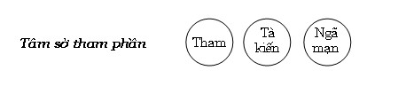

|
BuddhaSasana Home Page |
Vietnamese, with Unicode VU Times font |
Tâm Sở Vấn Đáp
Phần II - Tâm sở Bất thiện
(Akusalacetasikā)
Tỳ
kheo Chánh Minh
Chùa Bồ Đề, Vũng Tàu
|
Xin lưu ý: Cần có phông UnicodeViệt-Phạn VU Times cài vào máy để đọc các chữ Pàli. |
|
[02] B- Tâm sở tham phần. 79- HỎI: Thế nào là tâm sở Tham phần? Tham phần có bao nhiêu tâm sở?. ĐÁP: Những Tâm sở nào có trạng thái dính mắc vào cảnh, được gom lại thành một nhóm và định danh là “nhóm tâm sở Tham phần”. Những tâm sở này có chung trạng thái không muốn buông lìa “cái nó có được”. Ví như người nhặt được ngọc quý, y không muốn buông ra, chỉ muốn đem cất giữ. Nhóm tham phần gồm ba tâm sở: Tham (lobha), tà kiến (diṭṭhi), ngã mạn (māna). Tâm sở Tham có trạng thái bám vào những pháp tốt đẹp, hay những cảnh trần mỹ diệu để hưởng thụ khoái lạc qua các giác quan: mắt, tai, mũi, lưỡi, thân. Tam sở Tà kiến thì khắn khít với quan điểm sai lệch với chân pháp. Tâm sở Ngã mạn thì thích thú nắm giử những điều đặc biệt mà mình có. Biểu đồ tâm sở tham phần:  8o - HỎI: Thế nào là tâm sở Tham (lobhacetasika)? ĐÁP: Lobha (tham) từ ngữ căn LUBH nghĩa là bám chặt vào, xiết chặt lại. Pāli có giải tự như sau: “lubhatīti = lobha: Bám chặt vào, gọi là tham”. Khi nhận lãnh một điều tốt đẹp nào đó, tâm không muốn buông lìa, đó là do ảnh hưởng của tâm sở Tham, nên Đức Phật có dạy: “Chánh pháp còn phải bỏ huống chi là tà pháp”. Đối với một số pháp tốt như giới hạnh, thiền tịnh... Hành giả cần thực hành chứ không nắm giữ (upādāna), ví như người đi trên đường không dừng lại trên đường. Cũng vậy, giới - định - tuệ là con đường dẫn đến Nípbàn, nếu dừng lại trên đường sẽ không đến được mục đích. Đức Puṇṇa Mantāniputta có trả lời Đức Sāriputta (Xálợiphất) rằng: “Anupādā parinibbānatthaṃ: Không nắm giữ khi viên tịch”. [44] Chữ upādāna (nắm giữ) là một dạng khác của tham, upādāna là tham một cách tích cực. Tham là một trong ba căn bản bất thiện, nó đưa đến hại mình, hại người, hại cả hai. Tham làm cho người ấy trong hiện tại đau khổ, trong tương lai rơi vào khổ cảnh. Đức Phật có dạy: “Này các Tỷ kheo, với ai có lòng tham, bị lòng tham chinh phục, tâm không được tự chủ (pariyadumacitto), vu cáo người khác đau khổ (asata dukkhaṃ upadahati), bằng cách sát hại, trói buộc, tịch thu tài sản, mắng nhiếc...Như vậy, nhiều ác bất thiện pháp sanh ra từ tham, duyên khởi từ tham, tập khởi từ tham” Và: “Người bị ác pháp do tham chinh phục, ngay trong hiện tại sống đau khổ với tổn hại, với ưu não, với nhiệt não. Sau khi thân hoại mệnh chung, được chờ đợi là ác khổ cảnh.”[45] Một số danh từ khác chỉ cho những khía cạnh khác nhau của tham là: Pema (tình thương), taṅhā (ái dục), rāga (khát ái, đắm nhiễm), piya (yêu dấu, thương mến) kāya (sự thân yêu)... - Pema (tình thương) có hai loại: tình thương đúng đắn như con thương cha mẹ, cha mẹ thương con, các người thân trong gia tộc như anh chị em thương nhau... Loại tình thương này không rơi vào đắm nhiễm trong dục lạc, có thể xem như một hình thức của tâm từ. Loại tình thương thứ hai rơi vào đắm nhiễm trong dục lạc, như tình thương vợ chồng, tình thương giữa nam - nữ... Đây là tình thương của tham, gọi là “quyến luyến (rati)” hay “ái luyến”. Trong tạng Luật có câu truyện: Có hai mẹ con cùng xuất gia trong Giáo pháp này, mẹ là Tỳ khưu ni, con là Tỳ khưu. Do thương mến nhau nên hai mẹ con không thể xa rời nhau và cuối cùng đi vào thông dâm. Cho dù là tình thương đúng (tâm từ), nếu quá nhiều hay quá mạnh cũng dẫn đến bất thiện sân, còn nói chi đến “quyến luyến”, như Phật ngôn:
Kệ ngôn này nhắc đến câu truyện bà Thánh nữ Visākhā sấu muộn khi vừa mất người cháu thân yêu.[46] - Rāga (khát ái hay nhiễm đắm). Vải bị màu thấm vào làm mất màu sắc lúc ban đầu, cũng vậy tâm bị năm trần cảnh thấm vào làm mất đi sự trong sáng lúc ban đầu, gọi là nhiễm như Phật ngôn: “Này các tỳ khưu, tâm này là sáng chói, nhưng bị ô nhiễm bởi các cấu uế từ ngoài vào.”[47] Vải không thể buông bỏ màu, cũng vậy, tâm không thể buông bỏ các trần cảnh hay pháp khả lạc, khả ái, gọi là đắm. Và chữ virāga còn hàm ý chỉ cho Nípbàn, vì không còn nhiễm hay chìn trong thế gian. 81- HỎI: Sự khác nhau giữa tâm sở Tứ và Tham ra sao? ĐÁP: Tuy giữa tâm sở Tứ và tâm sở Tham có tính “dán chặt” vào đối tượng, nhưng có sự khác biệt là: - Tâm sở Tứ (vicāra) dán chặt các pháp đồng sanh vào cảnh, nhưng sự “dán chặt” này không mạnh mẽ, ví như người mẹ nâng niu, bồng ầm đứa con của mình không muốn rời nó. - Còn tâm sở Tham bám thật chặt cảnh không muốn xa lìa, ví như con trăn bắt được con mồi, càng lúc càng xiết cứng. Một số học giả thường dùng danh từ “khát ái (rāga)” để chỉ trạng thái này của tâm sở Tham. 82- HỎI: Pháp chi làm duyên cho tham sinh khởi?. ĐÁP: Làm duyên cho tham sanh khởi là những hành tướng tốt đẹp (subha nimitta), tức là năm trần cảnh khả ái, hấp dẫn đến lòng ham muốn thụ hưởng, hoặc các pháp an lạc thù diệu do quả của thiện nghiệp mang lại như: Danh tiếng, quyền uy, tài sản, hạnh phúc cõi trời.... “Này các tỳ khưu, Ta không thấy một pháp nào khác dẫn đến dục tham (kāmarāga) chưa sanh được sanh khởi, hay dục tham đã sanh được tăng trưởng quảng đại, này các tỳ khưu, như tịnh tướng (subhanimittaṃ).”[48] Thông thường bốn trong tám pháp thế gian là: Được lợi (lābho), được danh (yasa), được khen (pasaṃsā) và an lạc (sukha) là duyên cho tham sanh khởi. Bốn pháp còn lại là: Mất lợi(alābha), mất danh āyasa), bị chê (nindā), và đau khổ (dukkha) làm duyên cho sân sanh khởi. 83- HỎI: Giữa Tham (lobha) và Ái (taṅhā) có khác nhau không? ĐÁP: Tuy chi pháp của ái (taṅhā) cũng là tâm sở Tham, nhưng có sự khác biệt rõ rệt. Tham dính mắc vào đối tượng (cảnh) đến mức không muốn buông lìa, chỉ muốn thụ hưởng những khoái lạc do giác các giác quan mang lại, còn ái chỉ là sự ưa thích đối với cảnh an lạc mà thôi. Tham có tính cách thô thiển, còn ái thuộc dạng vi tế. Đức Phật có dạy:
Kệ ngôn trên cho thấy tính khác biệt của tham và ái. Đức Phật ví tham ái như là lửa thiêu đốt thân tâm, còn ái dục không nóng như tham, vì dòng sông thường mát mẻ, nhưng nhận chìm những ai đang trôi nổi trên giòng nước. Điều rõ ràng nhất là vị Thánh Anahàm, tuy không còn tham dục, nhưng vẫn còn ái sắc và ái vô sắc, tức là các Ngài vẫn còn phải luân hồi trong cõi Sắc giới hay Vô sắc giới. Hoặc các hành giả tu tiến Chỉ tịnh, chứng đạt các tầng thiền, cảm thấy thích thú trong các thiền cảnh, đó là ái. Pāli có giải thích sắc ái và vô sắc ái như sau: “Rūpārūpabhava rāgassa ca jhāna nikkantiyā cetaṃ adhāvacanaṃ: Dính mắc trong sắc hữu, Vô sắc hữu và thích thú khi đạt đến những tầng thiền.” Lại nữa, tham dẫn xuống khổ cảnh, trái lại ái có thể cho tái sanh về nhàn cảnh. Như người thích thú cảnh giới chư thiên, nên tạo phước bố thí, trì giới... để sanh về thiên giới Như vậy, ái mang đến hai cách khổ: Khổ địa vức (là bốn khổ cảnh) và khổ luân hồi. Khổ địa vức hình thành khi ái tăng thịnh trở thành tham. Còn khi ái chưa trở thành tham, nó dẫn chúng sanh lưu chuyển trong luân hồi qua những cảnh giới an lạc hay nhàn cảnh. Đức Phật dạy rằng:
84- HỎI: Hãy trình bày tứ ý nghĩa của tâm sở Tham? ĐÁP: Tứ ý nghĩa của tâm sở Tham là: - Trạng thái: Chấp cứng cảnh (ālambaggāha lakkhaṇo). - Phận sự: Dính mắc cảnh (abhisaṅga raso). - Thành tựu: Không buông cảnh (appariccāga paccupaṭṭhāna). - Nhân cần thiết: Ưa thích trong pháp trói buộc (saṃyojaniya dhammesu assadikkha padaṭṭhāna). Giải thích. - Trạng thái: Theo nguyên ngữ “ālambaggāha = ālambana + agga + ahata”. Ālambana là “cảnh”, agga là “cao nhất”, ở đây dùng theo nghĩa tốt đẹp, ahata là “còn mới”, “chưa hư hoại”. “ālambaggāha được hiểu là “sự thích ý (với cảnh) không suy giảm” nên được dịch là: “Dính mắc cảnh”. Tâm sở tham có tính cách bám vào những gì nó cho là tốt đẹp nhất, vì nó cho rằng “điều này không hề bị hư hoại”. Như đứa bé thích thú với bộ y phục mới vừa mặc vào, nó không hề muốn cởi bỏ ra, cũng vậy tâm sở Tham luôn cho cảnh là tốt đẹp và không hề muốn lìa bỏ cảnh. Cho dù có gặp lại cảnh đã nhàm chán trước đây, tâm sở Tham vẫn thích thú, vì thấy cảnh mới tốt đẹp hơn cảnh trước (dù cả hai chỉ là một). Và chúng ta nhận thấy có một số người cứ nghe đi nghe lại một bài hát mà không thấy chán, hay người dùng loại vật thực thượng vị đến khi nhàm chán rồi, về sau gặp lại loại vật thực đó vẫn thích thú. Đức Phật dạy “không nên có dục tầm hay dục tưởng” nhằm mục đích ngăn chận sự dính mắc này. Cảnh đáng ưa thích ở đây chưa hẳn là cảnh “tốt đẹp”, nó chỉ là những cảnh bình thường, nhưng xuất hiện đúng vào lúc tâm đang “khát vọng”, cảnh ấy trở thành tốt đẹp hơn mọi cảnh khác. Như khi đang đói, miếng cơm cháy bình thường sẽ là cảnh “tốt đẹp” của tâm, đang khát, chén nước lã tinh khiết là tuyệt vời. Tâm không muốn lìa bỏ cảnh đáng ưa thích, đó là trạng thái của tham. - Phận sự: Chữ “abhisaṅga” theo nguyên nghĩa là: “gom lại cao nhất” (abhi+ saṅgaha)”. Nghĩa là tâm sở tham “gom các pháp đồng sanh bám vào cảnh với sức mạnh cao nhất mà nó có được”, các Ngài gọi là “đắm nhiểm trong cảnh”. Tâm sở tham làm cho các pháp đồng sanh với nó bám chặt vào cảnh, không thể buông lìa cảnh như thanh nam châm hít chặt vụn sắt. Đây là phận sự của tâm sở Tham. - Thành tựu: Chữ “appariccāga = Na + pari + cāga. Pari là trọn vẹn, đầy đủ, cāga là buông lìa. Apapriccāga là không buông lìa cảnh trọn vẹn. Cho dù tâm sở tham hay cảnh đã diệt rồi, nhưng dư hưởng của tham vẫn tác động đến tâm sanh lên sau đó. Ví như người vừa uống rượu, chập sau không uống nữa nhưng hơi rượu từ nơi miệng vẫn còn. Hành giả khi quán sát, nhận thức rằng “có những lúc không muốn nghĩ đến những cảnh dục lạc, nhưng tâm vẫn bất lực và những hình ảnh ấy vẫn hiện khởi”, hành giả hiểu biết rằng “đây là sự thành tựu của tâm sở tham”. Đối với những cảnh đáng hài lòng, đáng thích thú thì điều này dễ hiểu. Còn những cảnh bất hạnh bị trạo lại, vì sao cũng do thành tựu của tham? Tâm muốn quên mà quên không được, rõ ràng có sự dính mắc và dính mắc này xuất phát từ “yêu cái tôi – ái ngã”, để rồi ngậm ngùi. Thành tựu của tâm sở tham ví như người đã dùng thỏa thích món vật thực thượng vị một cách no nê rồi, nhưng vẫn còn cảm thấy thiếu thiếu chưa thỏa mãn lắm. - Nhân cần thiết: Theo nguyên ngữ, chữ assadikkha = assa+ dikkhati. Assa là “cái ấy”, dikkhati la “thấy”. Saṃyojaniya dhammesu assadikkha là “thấy pháp trói buộc là điều đáng ưa thích”. Những cảnh tâm cho là tốt đẹp, đáng ưa thích đó là nhân cần thiết cho tâm sở Tham sanh lên. “-Này chư hiền, do nhân gì, do duyên gì tham chưa sanh được sanh khởi, và tham sanh rồi đưa đến tăng trưởng? - Cần phải trả lời là tướng tốt đẹp (subhanimitta)...[51] Thật ra, trước những pháp (nhất là những trần cảnh như sắc, thinh...) xinh tốt, tâm không thấy đó là pháp trói buộc, trái lại còn cho đó là điều đáng thụ hưởng. Như người đang đi đường nóng bức, thấy túp lều tranh, y cho “là điều đáng hài lòng”, nên đi vào trú trong lều, rõ ràng y bị căn lều “trói buộc” nhưng y không nhận thức được điều ấy. “Pháp nào khiến chúng sanh bị vướng mắc, pháp ấy gọi là pháp “trói buộc (saṃyojanadhamma - pháp triền)”. Có 10 pháp trói buộc chúng sanh, nhưng nguyên nhân gần khiến tham sinh khởi là ái dục triền (do đắm nhiểm trong ngũ dục nên bị trói buộc) và ái sắc triền (do đắm nhiễm trong các tầng thiền Sắc giới nên bị trói buộc). Tức là những pháp khả lạc, khả ái như cảnh giới chư thiên, các tầng thiền... Ái dục triền (kāmarāgasaṃyojana), là sắc, thinh, khí, vị, xúc tốt đẹp ở cõi người hay cõi chư thiên, còn ái sắc triền là những ấn tướng thiền hữu sắc hay các tầng thiền sắc giới. Vì sao ái vô sắc (arūpataṅhā) không là pháp trói buộc (saṃyojana)? Thật ra ái vô sắc cũng là pháp trói buộc theo nghĩa rộng, tức là trói buộc chúng sanh luân hồi trong cõi vô sắc. Còn pháp trói buộc ở đây chỉ cho tâm bị trói buộc, các ấn chứng của thiền vô sắc có tính rộng như: cái không vô cùng tận (ākāsānañca – không vô biên), thức vô cùng tận (viññāṇānañca - thức vô biên), tâm trước cảnh “vô cùng tận” ấy, không bám vào đâu ví như người đứng giữa cánh đồng bao la, nơi nào cũng như nhau nên không bám níu vào chỗ nào cả. Còn ấn tướng của thiền Vô sở hữu xứ là “không có nơi trú riêng (ākiñcañnā – Vô sở hữu), rõ ràng là “không có sự bám giữ” rồi. Còn thiền Phi tưởng phi phi tưởng xứ (nevasaññānāsaññāyatana) thi “tưởng dường như có dường như không” , do đó tâm không bị trói buộc vào các ấn tướng. Tâm thiền Vô sắc được gọi là bất động tâm (aneñjābhi citta), vì không bị ấn tướng thiền trói buộc. Như đã nói ở trên, những cảnh tốt đẹp chưa hẳn hoàn toàn là những cảnh tốt theo thực tính (sabhāva), nó tốt đẹp hơn mọi cảnh khi xuất hiện đúng vào lúc tâm đang “khát vọng”, như chiếc mền vải chưa hẳn là “tịnh tướng” so với gấm, nhiểu, nhung lụa, nhưng đúng vào lúc lạnh, nó trở thành “tịnh tướng”. Và “tịnh tướng” nên hiểu theo nghĩa rộng như thế. 85- HỎI: Hãy nói rõ về tâm sở Tham và tâm sở Dục? ĐÁP: Tâm sở Tham có trạng thái khao khát để được hưởng thụ những khoái lạc của nhục thể qua các giác quan, nó mang tính đạo đức xấu. Tâm sở Dục chỉ là sự ước muốn với những điều mình chưa có, ước muốn này có tính bình thường. Như người phật tử mong ước được tạo phước, hay một hành giả mong ước đạt nhửng thiền chứng hoặc như vị Sa môn ao ước học thông kinh điển ... Tuy hai pháp này có nét tương tự giống nhau là “mong muốn”, nhưng mong muốn của Dục không có nắm giữ (upādāna), như người bịnh mong mỏi tìm được thuốc để trị dứt bịnh, khi hết bịnh thì thôi, không hề “muốn có thêm thuốc ấy nữa”. Trái lại, tâm sở Tham “mong muốn” điểu chưa có để thụ hưởng hoặc điều đã có để tái hưởng thụ, có càng nhiều càng tốt. Ngoài sự “mong muốn” ấy ra, tâm sở tham còn có sự “nắm giữ”, ví như người đói, sau khi dùng vật thực hợp khẩu vị hả hê, khi đói muốn có lại loại vật thực ấy để dùng. Nói cách khác, tâm sở Dục tuy có mong ước nhưng mong ước theo nhu cầu, như đói phải có vật thực để ăn, khát phải có nước uống. Còn ước muốn của tâm sở tham mang tính “thụ hưởng”, như “ăn phải ngon - mặc phải đẹp”... Khi tâm sở Dục đi chung với tâm sở Tham thì nó trở thành tham dục (kāmachanda), đó là do bị hấp lực của tâm sở Tham chi phối, ví như nước lã bị nhuộm màu. Trái lại, khi tâm sở Dục xa lìa những páhp bất thiện thì nó trở thành pháp dục (dhammacchanda) là pháp tốt. Hành giả hay học viên nên nhận định rõ hai trạng thái của tâm sở Dục và tâm sở Tham như thế. 86- HỎI: Thế nào là tâm sở Tà kiến (diṭṭhicetasika)? ĐÁP: Diṭṭhi từ ngữ căn DIS là thấy, biết, diṭṭhi thường được hiểu là “quan niệm, quan điểm, quan kiến”. Khi diṭṭhi đi chung với tính từ sammā, thành sammā diṭṭhi là chánh kiến. khi đi chung với micchā thành micchādiṭṭhi là tà kiến, khi diṭṭhi đi đơn độc được hiểu là “ám chỉ tà kiến”. Tà kiến là sự thấy sai lệch với sự thật, tức là nhận thức với một quan điểm không đúng với thực tính pháp (sabhāvadhamma). Pāli có giải thích như sau: “Micchā passatīti = diṭṭthi: Thấy sai lệch (với chân pháp), gọi là (tà) kiến.” Thực tính pháp ở đây là nói đến bàn chất của pháp hữu vi, tất cả pháp hữu vi đều có ba thực tính: vô thường, khổ và vô ngã, ngoài ra còn có một số pháp hữu vi khác mang tính “không trong sạch” như thân thể chúng sanh, các phiền não... Tà kiến là nhìn thấy các pháp ấy trái ngược lại, như vô thường cho là thường, khổ cho là lạc, vô ngã cho là ngã, không trong sạch cho là trong sạch. “Này các tỳ khưu, sự kiện này không xẩy ra, không có được: “Một người thành tựu (chánh) kiến có thể chấp nhận (upagaccheyya) các hành là thường còn”, sự kiện này không xảy ra. Và sự kiện này có xảy ra, này các tỳ khưu, kẻ phàm phu có thể chấp nhận các hành là thường còn, “sự kiện này có xảy ra”. .... “Một người thành tựu (chánh) kiến có thể chấp nhận các hành là lạc”, sự kiện này không xảy ra. Và sự kiện này có thể xảy ra, này các tỳ khưu, kẻphàm phu có thể chấp nhận các hành là lạc, “sự kiện này có xảy ra”. ... “Một người thảnh tựu (chánh) kiến có thể chấp nhận các hành là ngã”, sự kiện này không xảy ra. Và sự kiện này có thể xảy ra, này các tỳ khưu, kẻ phàm phu có thể chấp nhận các hành là ngã, “sự kiện này có xảy ra”[52] Và:
Tà kiến có hai loại: - Sự thấy sai thông thường: như nhầm lẫn người nam ra người nữ, viên ngọc là viển sỏi đẹp hay viên sỏi đẹp là viên ngọc ... loại tà kiến này vô hại. - Sự thấy sai đặc biệt: Tức là thấy sai các thực tính của pháp hữu vi, đồng thời có sự “tin chắc” vào sự thấy - biết sai lệcch này (thuật ngữ gọi là chấp kiến hay kiến thủ - upādānadiṭṭhi), còn gọi là tà tín (micchā saddhā). Hoặc chấp nhận một chủ thuyết sai lạc và tin rằng “đây chính là chân lý” ngoài ra là hư ngụy. Như tin có một Đấng Thượng đế tạo ra thế gian, tin có một linh hồn (jīva) thường hằng ... Loại tà kiến đặc biệt, nói gọn có thì có hai: Thường kiến (sassatadiṭṭhi) và đoạn kiến (ucchedadiṭṭhi). Nếu phân tích rộng thì có đến 62 loại tà kiến, như Đức Thế Tôn đã thuyết giảng bài kinh Phạm võng (Brahmajālasutta) trong Trường bộ I (Dīghanikāya). Có hai duyên trợ cho tà kiến sanh khởi là: a- Chấp nhận một quan điểm sai lầm của người khác. Tức là, qua sự rao giảng của người khác, hay thân cận với người có sự nắm giữ tà kiến rồi nghe người ấy thuyết phục. b - Không có sự suy xét sâu xa tế nhị, có sự suy xét theo thông tục thường tình ở đời. “Này chư tỷ kheo, có hai duyên khiến tà kiến sanh khởi. Thế nào là hai? Tiếng nói của người khác (parato) và không như lý tác ý.”[54] Theo bản Sớ giải, “tiếng nói người khác (parato ghoso) có hai ba loại: - Do truyền thuyết từ xưa lưu lại. - Do suy luận siêu hình, rồi đem rao giảng đến người khác, người nghe tin theo. - Các thiên nhân nói lại, như đạo sĩ Asita nghe thiên nhân báo tin “Bồ tát chánh giác xuất hiện”. Tiếng nói của người khác làm duyên khiến tà kiến khởi sanh, đó là “những lời hư ngụy, không đúng sự thật theo chân pháp”. Đức Phật có dạy: “Này các Kālāmā, chớ có tin vì nghe theo trruyền thuyết (anussavena), chớ có tin vì theo truyền thống (paramparaaya), chớ có tin vì nghe người ta nói (itikiraaya), chớ có tin vì nhân lý luận siêu hình (lakkahetu)...”[55] Và Đức Phật dạy: - “Nhưng này các Kālāmā, khi nào tự mình biết rõ như sau: “Các pháp này là bất thiện, các pháp này là có tội, các pháp này bị người có trí chỉ trích, các pháp này nếu thực hiện và chấp nhận (samattā, samādinnā), đưa đến bất hạnh khổ đau”, thời này Kālāmā, hãy từ bỏ chúng.... - Này các Kālāmā, khi nào tự mình biết như sau: “Các pháp này là thiện, các pháp này không có tội, các pháp này không bị người có trí chỉ trích, các pháp này nếu thực hiện và chấp nhận, đưa đến hạnh phúc an lạc”, thời này Kālāmā hãy đạt đến và an trú.(sđd). 87- HỎI: Nhân sanh tà kiến có mấy? ĐÁP: Nhân sanh tà kiến có năm là:
Giải thích: 1- Có khuynh hướng Tà kiến (ajjhāsaya). Là người thường có sự suy nghĩ theo lý thuyết lầm lạc như: “Có thượng đế, có một linh hồn thường tồn tại không thay đối”. Hoặc nghiêng theo khuynh hướng “chết là hết (đoạn)” hoặc lầm lạc điều “có cho là không, điều không cho là có”. Đức Phật có dạy:
Khuynh hướng tà kiến này trong tạng Thắng pháp (Abhidhamma) gọi là “ngâm tẩm trong kiến thức sai (kiến lậu- diṭṭhāsava) hay “tiềm ấn kiến thức sai (kiến tùy miên - diṭṭhānusaya)”. Vì sao có khuynh hướng này? Sự xuất hiện của Đức Phật trong thế gian là điều hy hữu, khi không có giáo pháp của Đức Như lai xuất hiện, thế gian chìm đắm trong bóng tối (vô minh), nên sự nhận định đúng chân pháp không khởi lên (ngoài một số ít chúng sanh trở thành Đức Phật Độc giác, nhưng giáo pháp dẫn đến giác ngộ vẫn không hiển lộ). Đa phần chúng sanh chỉ rơi vào hai trạng thái “cho có cái gì đó là thường hằng”, hoặc cho rằng “chết là tiêu diệt” và thời gian chìm đắm trong hai sự kiện trên lâu vô số kể, do đó gọi là “kiến ngâm tẩm”. Sở dĩ có khuynh hướng “thường “hay “đoạn” là do trong hiện tại suy luận vào “hiện tượng sự tồn tại hay sự sống – jīva”, rồi tưởng tượng sự sống ấy là một bản ngã, để rồi đi đến kết luận: “Bản ngã tồn tại”, hoặc “bản ngã bị tiêu diệt”. Như thế, cho thường còn hay diệt mất đều là tà kiến, vì bám chấp vào “cái bản ngã này”. Lý vô ngã (anatta) chỉ xuất hiện trong thời có Giáo pháp của Đức Phật qua trí tuệ của vị Chánh đẳng giác, cái sự sống (tồn tại) được Đức Phật minh giải qua lý duyên khởi. Tức là sự sống ấy vốn có, nhưng nó không thường cũng không đoạn, nó hiện hữu nhờ có nhân duyên, khi hết nhân duyên thì nó diệt, nhường bước cho sự sống khác sinh lên. Ví như ngọn lửa cháy nhờ có nhiên liệu, nhiên liệu còn, ngọn lửa còn, thay đổi nhiên liệu thì ngọn lửa thay đổi, khi nhiên liệu hết, ngọn lửa tắt. Nhiên liệu ví như nhân duyên, ngọn lửa ví như sự sống. Đức Phật có dạy:
Nói cách khác, cái tự ngã hay sự sống chỉ là “chuổi nối tiếp của nhân duyên, nhân duyên thay đối nên sự sống thay đổi, nhưng nhân duyên luôn nối tiếp nhau sanh khời, nên sự sống luôn tiếp diễn chứ không biến mất. Và năm uẩn là biểu hiện của jīva, pháp làm cho sự sống luôn tiếp nối tồn tại chính là ái (taṅhā), diệt được ái là chấm dứt nhân duyên sinh khởi năm uẩn. Một số Phật tử còn ái luyến sự sống, nghe Vô dư Nípbàn là chấm dứt sự “tái sinh” của năm uẩn thì có tâm trạng “lo sợ” đối với Nípbàn. Nên hiểu rằng: “Bao giờ còn 5 uẩn, bấy giờ còn khổ, không còn 5 uẩn thì mới chấm dứt khổ”, vị Thánh Alahán tuy không còn khổ tâm vì đã sát trừ trọn vẹn mọi phiền não (kilesa), nhưng vì còn xác thân nên thân Ngài vẫn bị khổ, như Đức Phật bị bịnh kiết lỵ chẳng hạn... 2- Thân cận người tà kiến. Người tà kiến ở đây là nói đến người “ngảnh mặt với chân lý”. Có hai hạng người tà kiến là: - Người không có niềm tin nơi Tam bảo, như những tín đồ bên ngoài Phật giáo. Những người này “hoặc là tin có một thượng đế hằng hữu, một linh hồn trường tồn, hoặc là: “Chúng sanh ngẫu nhiên sinh lên, chết là hết”. Thật ra, chẳng một ai thấy thượng đế cả (ngoại trừ người chủ xướng ban đầu và chắc gì vị ấy thấy được Sáng tạo chủ), tin có thượng đế là do truyền thuyết hay do suy luận.” Theo truyền thuyết của ngưới Ấn cổ thuộc giáo hệ Bàlamôn, thì Đấng Phạm thiên là vị sáng tạo chủ, tuy nhiên Ấn giáo vẫn cho tự ngã với đại ngã (thượng đế) cũng chính là một. Như Mundaka Upanishad 2 mô tả: “Người (Brahman) là linh hồn sáng chói và là Purusha không có hình dáng rõ rệt, không do ai tạo ra và tồn tại cả ở bên trong và bên ngòai...”[61](có thể bộ kinh này do đời sau biên soạn lại). Và Sáng tạo chủ “không có hình dáng”. Theo Trường Bộ I, kinh Phạm võng, một sự ngẫu nhiên trùng hợp khiến cho tư tưởng có Sáng tạo chủ (hay Thượng đế) hình thành, tóm lược như sau: “Khi thế giới mới hình thành, một Phạm thiên cõi Quang âm (cõi Nhị thiền) mệnh chung tái sanh về cõi Sơ thiền. Sống ở cõi này một thời gian rất lâu, vị Phạm thiên đầu tiên khởi ý: “Mong sao có các loài hữu tình khác, cũng đến chỗ này”. Ngay khi ấy, ngẫu nhiên có vị Phạm thiên khác vừa mệnh chung cõi Quang âm thiên, tái sanh về cõi Sơ thiền. Bấy giờ vị Phạm thiên trước suy nghĩ: “Chính do ta khởi niệm “mong sao có các loài hữu tình khác, cũng đến chỗ này”. Và có chúng sanh khác ngay, vậy ta chính là Đấng Toàn năng , Sáng tạo chủ, Hóa sanh chủ. Vị phạm thiên sinh sau cũng có ý nghĩ như vậy” (Tụng phẩm 2).” - Hạng tà kiến thứ hai là những Phật tử trên danh nghĩa, những Phật tử này không hề tìm hiểu Phật lý, không tìm hiểu về những thực tính pháp, họ chỉ có niềm tin suông và chỉ biết “cầu nguyện vào tha lực”. Đức Phật có dạy: “Như lai chỉ là bậc chỉ đường”[62] Trong kinh Pháp cú, Đức Phật cũng dạy: “Attā hi attano nātho – Ta chính là vị cứu tinh của ta”. Như thế rõ ràng, tự chúng ta thực hành con đường dẫn đến giác ngộ là giới - định - tuệ mới chứng đạt được chân lý. Sự chứng đạt chân lý giải thoát khổ là do chính nội lực chứ không phải “cầu nguyện suông” hay “dựa vào tha lực”. 3- Hờ hửng với Chánh pháp. Chánh pháp ở đây ám chỉ bốn chân lý: Khổ, Tập, Diệt và Đạo trong kinh Chuyển pháp luân, bài kinh đẩu tiên khai mở của Vô sinh bất tử cho những ai có duyên lành, có tâm tầm cầu giải thoát khổ. Người không có tâm lắng nghe, học hỏi Giáo pháp nhất là bốn chân lý cao quý ở trên, hay những pháp liên hệ đến bốn chân lý trên, tâm trí ngưới này sẽ không thấu triệt được lý nhân quả, gọi là người hờ hửng với Giáo pháp.Thế là tâm người này sẽ đi sâu vào sự “tin tưởng một năng lực huyền bí cứu hộ”, lâu dần chánh kiến sẽ phai mờ và tà kiến tùy miên sẽ trổi dậy. Trái lại, người tìm hiểu vấn đề nhân quả, hiểu thấu đáo nhân quả, cho dù chưa chứng đạt được đạo, quả, Nípbàn. Nhưng tà kiến về thường hay đoạn tạm thời bị áp chế, chúng mất năng lực “vẽ vời”, tô điểm cho cái ngã vốn không có. 4- Nhiều suy luận sai lầm. Chữ micchāvitakka, theo nguyên nghĩa là tà tư duy, là suy nghĩ không đúng. Suy luận sai lầm ở đây có hai loại:[63] a- Suy nghĩ về hưởng thụ dục lạc (kāmavitakka). Là suy nghĩ đến sự hưởng thụ năm trần cảnh sắc, thinh, hương, vị, xúc cùng những pháp khả lạc khả ái trong cõi dục. Khi suy nghĩ về sự hưởng dục lạc sẽ có tư tưởng “ta hưởng dục lạc” hay “dục lạc này là của tôi”, hay cho rằng “có một thế giới dục lạc, thế giới này là thường”... Tỳ khưu Ariṭṭha, là một minh chứng cho loại tà kiến phát sanh tử suy nghĩ hưởng dục này. Tỳ khưu Ariṭṭha đã khởi lên ác tà kiến (pāpakaṃ diṭṭhigataṃ) tuyên bố rằng: “Theo như ta hiểu pháp Đức Thế Tôn thuyết giảng, khi thọ dụng những pháp được Đức Thế Tôn gọi là chướng ngại pháp, thật sự không có chướng ngại gì.” Vả Đức Thế Tôn đã khiển trách tỳ khưu Ariṭṭha, các dục lạc vui ít khổ nhiều, Đức Thế Tôn dạy: “Dục lạc ví như xương khô, ví như miếng thịt thối, ví như bó đuốc cỏ khô, ví như hố than hừng...”(sđd) Một số Phật tử hiểu lầm Nípbàn là một cõi trú ấn của chúng sinh và cho rằng nơi đó ngập tràn những trần cảnh sắc, thinh, hương, vị xúc, pháp khả ái thù thắng. Chứng đạt Nípbàn là để hưởng thụ những lạc thú thù thắng. Họ đã hiểu lầm câu Phật ngôn: “Nibbānaṃ paramaṃ sukhaṃ: Nípbàn là hạnh phúc (lạc) cao nhất” [64]. Họ cho rằng “đã có hạnh phúc tức phải có ngưởi thọ dụng hạnh phúc, và đi đến kết luận: Nípbàn là cõi có hạnh phúc thù thắng nhất”. Thật ra Nípbàn chỉ là cảnh giới, cảnh giới thì không có ngũ uẩn, như Phật ngôn: “Sabbe dhammā anattā: Tất cả pháp là vô ngã”[65]. Chữ atta ở đây chỉ cho 5 uẫn, anatta hàm ý “rỗng không (năm uẩn)”. Sở dĩ Nípbàn được gọi là cảnh giới vì Nípbàn bị tâm biết, nhưng tâm không có trong Nípbàn. Ví như người nhìn thấy “một khoảng trời xanh”, tâm nhận biết “một khoảng trời xanh (là cảnh)”, nhưng tâm không có trong khoảng trời xanh ấy (nếu tâm có trong khoảng trời xanh, khi ấy người này có lẽ là người không tâm). Và “đã không có tâm trong Nípbàn dĩ nhiên không có thọ, vì thọ luôn đi chung với tâm”. Năm uẩn là pháp hữu vi (saṅkhāra), phàm bất kỳ pháp hữu vi nào cũng đều bị định luật vô thường chi phối, cái gì vô thường đều dẫn đến khổ, như Đức Phật đã dạy trong kinh Vô ngã tướng (anattalakkhaṇasutta). Vì Nípbàn không có pháp hữu vi, nên không có tính vô thường, không bị luật vô thường chi phối thì không khổ. Và sukha (hạnh phúc hay an lạc) là nói đến sự kiện không khổ do không có sinh diệt, chứ không phải nói đến thọ lạc. Một dạng tà tư duy khác là: suy nghĩ về hiềm hận (byāpāda vitakka) hoặc suy nghĩ về hại người (vihṃsa vitakka) – sẽ giải thích trong phần tâm sở Sân. b- Suy nghĩ đến những vấn đề không thể hiểu rốt ráo. Có bốn vấn đế không nằm trong lãnh vực hiểu thấu đáo (ngoại trừ trí bậc Chánh giác), cho dù đó là trí của Đức Dộc giác hay Thánh Thượng thủ Thinh văn như ngài Sārīputta (Xálợiphất), Moggallāna (Mụckiềnliên). Bốn vấn đề đó là:
Có một số chúng sanh không ước lượng sức minh, muốn tìm hiểu trí tuệ của Đức Phật, nhưng điều này vượt qua khả năng của họ. Lẽ thường, muốn hiểu rõ tận tường ân đức người khác, người tìm hiểu phải có ân đức ngang hoặc cao hơn vị ấy. Nhưng trí Đức Phật thì không một ai có thể cao hơn được, cho dù đó là những vị Chánh giác trong quá khứ hay trong tương lai. Người, chư thiên hay Phạm thiên có thể nhận thức trí tuệ của Đức Chánh giác thậm thâm vi diệu, nhưng cụ thể “thậm thâm đến mức độ nào? Vi diệu đến mức độ nào?”. Đành chịu thôi. Đức Sāriputta (Xalợiphất) có dạy: “Bậc chân nhân biết được bậc chân nhân và phi chân nhân. Bậc phi chân nhân không thể biết được bậc phi chân nhân và bậc chân nhân.” Vì đã không có trí thì làm sao hiểu được “đây là bậc cao (chân nhân), đây là bậc không cao (phi chân nhân)”. Chính Đức Sāriputta cũng bị Đức Thế Tôn rầy “đã đại ngôn”, khi Ngài tán dương Đức Thế Tôn là vị Đạo sư không có bậc Đạo sư nào hơn được về phương diện giác ngộ (cả trong quá khứ, hiện tại lẫn tương lai), Đức Phật đã hỏi: “Này Sāriputta, có phải với tâm của ngươi, ngươi được biết: Trong quá khứ, các vị Alahán Chánh đẳng giác có giới đức là như vầy, pháp là như vầy, trí là như vầy, giải thoát của chư vị Thế Tôn là như vầy. Trong tương lai..... Trong hiện tại, Ta là vị Alahán Chánh đẳng giác, này Sāriputta, có phải với tâm của ngươi, ngươi được biết: Giới đức của Đức Thế Tôn là như vầy, Pháp là như vầy, trí là như vầy, giải thoát của Đức thế Tôn là như vầy”.[66] Đức Sāriputta trả lời: “Ngài không thật biết như vậy” và Ngài giải thích: Sở dĩ Ngài có có niềm tin như vậy, do Ngài chứng đạt được truyền thống Chánh pháp. Có chúng sanh khác lại suy tư về sự trả quả của nghiệp, như: Nghiệp này cho quả bao nhiêu thì dứt? Bao giờ thì dứt được nghiệp này? ... Sự suy nghĩ này vượt ra tầm kiểm soát qua trí tuệ của người ấy. Mặt khác, có một số chúng sanh lại cho rằng: “Khổ thọ hay lạc thọ là do kết quả từ nghiệp”. Đây cũng là một điều sai lầm (tà kiến) khác trong lãnh vực này. Vì rằng: “Có những lạc thọ hay khổ thọ sanh lên do nhân thời tiết, do nhân tinh tấn (như người Phật tử tinh tấn hành đạo phát sanh khổ thọ, không tinh tấn hành thiền thì không có khổ thọ...)...”[67] Năng lực thiền định, ám chỉ thần thông (iddhipāda), sự kỳ diệu của năng lực này không thể suy nghĩ cho đến tận cùng được, không thể giám định “sự kỳ diệu của năng lực thần thông có chừng này... chừng này”. Vì rằng: “Năng lực thần thông kỳ diệu nhiều hay ít là do nương vào trí, trí hổ trợ cho định được sung mãn, trí càng mạnh năng lực thiền định càng tăng trưởng”. Và chúng ta thấy Đại bi định (mahākarunāsamādhi) của Đức Phật, không một Thánh Thinh văn hay Độc giác Phật nào sánh bằng, nguyên nhân vì trí của các Ngài không thể sánh bằng trí của Đức Thế Tôn hay Song thông lực của Đức Thế Tôn không một vị Thánh nào có thể thực hiện được.. Có một số chúng sanh khi nghĩ về thế gian (vũ trụ), có sự suy tư rằng: Thế gian này hình thành như thế nào? Ai là người tạo ra thế gian này? Chúng sinh nào hiện hữu trước tiên trong thế gian? Hoặc suy nghĩ: Tại sao có loài hai chân, có loài bốn chân, có loài nhiều chân, có loài lại không chân? Hay vì sao con quạ có lông màu đen trong khi con cò lông lại trắng... Những suy tư nhưng thế, sẽ làm nảy sinh những suy luận qua hiện tượng, để rồi dẫn đến những nhận định sai lạc về chân pháp. 5- Không khéo vượt khỏi sai lầm (ayoniso ummujjanaṃ). Chữ Ummujjana (sự nỗi lên, sự xuất hiện), xuất phát tử động từ ummujjati (a+ căn maj +a), umujjati nghĩa là “nổi lên, xuất hiện”. Theo nguyên nghĩa là “không khởi sanh tác ý đúng nổi lên”. Ayoni so manasikāra (không khởi sanh tác ý đúng) là nguyên nhân chung cho các pháp bất thiện sanh lên. Trong lãnh vực tà kiến thì ayoni so manasikāra chỉ cho những ý nghĩa sai lầm. Và cái gì “nổi lên”? Chính là kiến tùy miên (diṭṭhanusaya) hay kiến ngâm tẩm (diṭṭhāsava). Nên hiểu rằng “kiến tùy miên “không phải có sẵn để nổi lên, nó chỉ khởi hiện khi gặp duyên, ví như sóng không có sẵn trong nước, nhưng khi có gió thì sóng xuất hiện. Kiến tùy miên là những gì sai lầm đã từng có, từng nắm giữ trong quá khứ, đó là:
Đức Phật gọi bốn điều này là điên đảo pháp (vipallāsadhamma). Và không thoát ra được những điều sai lầm này, cũng là nhân sanh khởi tà kiến. Lại nữa, người chấp cứng điều đã từng thấy, đã từng nghe (dù điều ấy không phải là cốt lõi, không phải là sự thật. Điiều từng thấy, từng nghe chỉ là một hiện tượng, không hẳn sự thật là như thế, như có số Samôn, Bàlamaôn nhờ tu tập thiền tịnh có thắng trí, thấy chúng sanh chết nhưng không thấy chúng sanh ấy khởi lên (do không thếy được sự tục sinh của chúng sanh ấy), thế là đi đến đoạn luận. Cũng giống như người nhìn thấy sao Hôm lặn, nhưng không thấy sự di chuyển của sao Hôm, cho rằng sao Hôm không còn trong đêm, gần sáng sao Hôm xuất hiện thì cho đó là sao Mai (một ngôi sao khác). Lại nữa, có những vấn đề sâu kín tế nhị như: Sự tái sinh, những cảnh giới vô hình, năng lực thần thông, Đạo - quả siêu thế, trạng thái Nípbàn... Những vấn đề ấy có thật, nhưng người chứng thực những trạng thái ấy lại không rõ ràng với người khác. Và do không chứng nghiệm được những trạng thái trên, nên cho rằng “điều có thật cho là không thật”, như cho rằng: “Không có Samôn, Bàlamôn nào chứng đạt thắng trí”. Hoặc như giáo chủ Nigantha Nātaputta cho rằng: “Diệt tầm tứ chứng đạt Nhị thiền là điều không thể có.”[68] 88- HỎI: Thế nào là thường kiến (sassatadiṭṭhi)? ĐÁP: Thường kiến là “cho rằng: Có một thực thể thường hằng không thay đổi, không biến hoại". Như cho rằng: “Con người có một linh hồn (atman - tự ngã) luôn luôn tồn tại, nếu kiếp này là người thì kiếp sau cũng là người, linh hồn này không bị hoại diệt...” Hoặc có quan điểm cho rằng: “Có một thực thể thường tồn gọi là chân ngã. Những hình thức tái sanh thành người, chư thiên hay súc sanh ... chỉ là chiếc áo bên ngoài của chân ngã ấy.” Bộ Luận điểm (kathāvatthu) có nêu ra luận điểm này và đã bác bỏ quan điểm: “Có một thực ngã tuyệt đối hằng hữu”[69]. Thường kiến còn được gọi là “nắm giữ cái có” (chấp hữu), thông thường chúng sanh cho rằng “có một cái thức thường hằng”. Chữ sassata = sa + sata. Sata là suy nghĩ, chú tâm, sassata là “có (một) cái thức”. Tức là cho thức không hề biến đổi, hay “có một cái thức” là chủ tể (nātho) của thân xác này, thức ấy không hề bị hoại diệt. Từ ý nghĩ “có một thực thể thường hằng”, nảy sinh quan điểm: “Có vị Thượng đế thường hằng” hay “có một tự ngã (atta) thường hằng”. Nói cách khác, thường kiến là tin tưởng “có một thực thể (nào đó) không hề thay đổi (thực thể ở đây nên hiểu là pháp hữu vi)”. 89 -HỎI: Do nhân nào phát sanh thường kiến?. ĐÁP: Theo Kinh Phạm võng (Brahmajālasutta) trong Trường bộ kinh I, Đức Thế Tôn có thuyết giảng: Cho rằng: “Có một bản ngã thường hằng (thường kiến)”, có bốn trường hợp: - Do tu tập chứng đạt thiền định, nhờ năng lục thiền định nên nhớ lại quá khứ, tối đa 1 kiếp trái đất (kiếp trái đất có bốn giai đoạn: Thành (giai đoạn hình thành), Trụ (giai đoạn vững vàng), Hoại (giai đoạn bị tiêu hoại), Không (giai đoạn trống vắng)) . - Do tu tập chứng đạt thiền định, nhờ năng lục thiền định nên nhớ lại quá khứ, tối đa 10 kiếp trái đất - Do tu tập chứng đạt thiền định, nhờ năng lục thiền định nên nhớ lại quá khứ, tối đa 40 kiếp trái đất. - Do suy luận. Ở đây nên ghi nhận: “Sự nhớ lại này là của phàm nhân, tức là người còn tà kiến. Chư Thánh cũng nhớ lại quá khứ nhưng các Ngài đã trừ diệt tà kiến rồi và sự nhớ của các Ngài vượt xa 40 kiếp trái đất”[70]. Trong hạng phàm nhân có bốn hạng là: Phàm nhân thông thường, Bồtát Thinh văn giác, Bồtát Độc giác và Bồtát Chánh đẳng giác. - Phàm nhân thông thường (ám chỉ ngoại đạo), nhớ về quá khứ không quá 1 kiếp trái đất. - Phàm nhân là Bồtát Thinh văn Alahán (thường), nhớ về quá khứ tối đa là 1o kiếp trái đất. - Phàm nhân là Bồ tát Thinh văn Alahán đại đệ tử, nhớ về quá khứ tối đa là 20 kiếp trái đất. - Phàm nhân là Bồtát Thượng thủ thinh văn hay Bồtát Độc giác, nhớ về quá khứ tối đa là 30 kiếp trái đất. - Phàm nhân là Bồtát Chánh giác, nhớ về quá khứ tối đa là 40 kiếp trái đất.[71] Do đó, trong kinh Phạm võng, Đức Thế Tôn chỉ nói đến con số 40 kiếp trái đất. 90 - HỎI: Thường kiến và thân kiến (sakkāyadiṭṭhi) có khác nhau không? ĐÁP: Thân kiến cũng chính là thường kiến, chỉ khác đối tượng mà thôi. Khi cho “có một thực thể thường hằng ở bên ngoài ngũ uẩn (tha ngã) hay ở bên trong năm uẩn (tự ngã)”, đó là thường kiến. Khi cho rằng “có cái ta (atta)” không thay đổi, gọi là thân kiến (sakkāyadiṭṭhi). Sakkāya = sa+ kāya + diṭṭhi ( thấy có thân, kāya ở đây chỉ cho tự ngã). Dễ hiểu hơn thì: thường kiến bao trùm thân kiến, thân kiến cho rằng “có tự ngã thường hằng”, còn thường kiến thì cho rằng “có tha ngã lẫn tự ngã thường hằng.” 91 - HỎI: Hãy trình bày các dạng thân kiến?. ĐÁP: Thân kiến là sự hiểu (thấy) sai về 5 uẩn, mỗi uẩn có bốn cách hiểu sai, thành ra 20 thân kiến.[72] Về sắc uẩn: - Nhận thấy sắc uẩn là tự ngã. Sắc uẩn ở đây chỉ cho tứ đại, tức là chấp nhận đất là tự ngã, nước là tự ngã... “... nghĩ đến (tự ngã) như là địa đại – pathavim- me ti maññati”.[73] - Nhận thấy tự ngã có sắc uẩn. Như nhận định rằng “lúc này tôi mập, lúc này tôi gầy...” - Nhận thấy sắc uẩn trong tự ngã. Là cho rằng ta là chủ của sắc uẩn, sắc uẩn này thực hiện theo ý muốn của ta, như ta muốn đi thì sắc uẩn đi, ta muốn nằm thì sắc uẩn nằm... “Này các tỳ khưu, có một số Samôn, Bàlamôn chủ trương rằng: “Bản ngã có sắc, vô bịnh, sau khi chết có tưởng...”[74] Quan điểm này cho rằng: Sắc là vật phụ tùng của tự ngã, tự ngã sai sử sắc hoạt động theo ý. Ví như món đồ vật người mang theo kgi đi đường, người này sẽ sử dụng món đồ này theo như ý. - Nhận thấy tự ngã( ở) trong sắc uẩn. Là có sự nhận định rằng “Do nương vào thân này, ta tạo ra thiện nghiệp hay ác nghiệp...”. Ví như viên ngọc được đựng trong chiếc hộp, nhờ có viên ngọc nên chiếc hộp mới có, cũng vậy, do tự ngã có trong sắc uẩn nên sắc uẩn được tồn tại. Hay ví như, có đồng thời tự ngã nương vào thân để tạo thiện nghiệp hay bất thiện nghiệp. Đây là một quan niệm thường có đối với chúng sanh. Điển hình như du sĩ Saccaka cũng quan niệm như thế. Ông đã vấn nạn Đức Thế Tôn rằng; - “Thưa Tôn giả Gotama, như người này mà tự ngã là sắc, nương tựa vào sắc để làm thiện sự hay ác sự. Đức Phật hỏi du sĩ Saccaka rằng: - Này Aggivessana, ngươi có quyền gì đối với sắc? Sắc của tôi phải như thế này... như thế này?”[75] Và du sĩ Saccaka đã im lặng. Hay phái Nigantha Nātaputta cũng quan niệm như thế và cho rằng “thân nghiệp là nặng nhất”.[76] Về thọ uẩn: - Nhận thấy thọ uẩn là tự ngã. Như chấp rằng: “tôi đau, tôi buồn, tôi vui, tôi thản nhiên...”. - Nhận thấy tự ngã có thọ uẩn. Như chấp rằng: “Tôi có bịnh đau nhức, tôi có sự vui thích khi gặp lại thân bằng quyến thuộc, tôi luôn thản nhiên khi gặp nghịch cảnh... - Nhận thấy thọ uẩn trong tự ngã. Là cho rằng: “Sự khổ, vui, hạnh phúc, đau khổ có sẳn, có sự sắp đặt trước”. Nhận thấy “thọ uẩn trong ta” có nét tương tự như thuyết “định mệnh”. Một số người theo thuyết này cho rằng: “Hạnh phúc hay đau khổ là do Thượng đế định đặt”. Ở đây, thì cho rằng hạnh phúc hay đau khổ là do ta tạo ra qua nghiệp thiện hay bất thiện trong quá khứ, những thọ lạc (hạnh phúc) hay thọ khổ (đau khổ) đã sẵn dành và ta phải nhận lãnh chúng. Trong sáu vị giáo chủ ngoại đạo trong thời Đức Phật, giáo chủ Nigantha Nātaputta cũng có quan điểm này. “Này các tỳ khưu, có một số Samôn, Bàlamôn có lý thuyết như sau: “Phàm cảm giác gì con người này lãnh thọ, lạc thọ, khổ thọ hay bất lạc bất khổ thọ, tất cả đều do nhân các nghiệp quá khứ...”[77]. Và Đức Phật đã vặn hỏi các vị Nigantha rằng: - “Này chư hiền Niganthā, các ngươi có biết: “Trong quá khứ, chúng tôi có hiện hữu, chúng tôi không có hiện hữu?”. - Thưa hiền giả, không. Đoạn kinh trên cho thấy: “Không hề biết trong quá khứ “có hiện hữu” hay “không hiện hữu” thì làm thế nào biết có tạo nghiệp hay không tạo nghiệp?. Sự biết về “nghiệp quá khứ” trong trường hợp này là do suy luận, sự suy luận có thể đúng hoặc có thể sai. Và khi tin tưởng vào điều sai lầm, đó là tà kiến. Với quan điểm: “lạc thọ, khổ thọ, thọ không lạc không khổ là do nhân nghiệp quá khứ”, Đức Thế Tôn phán hỏi rằng: “- Chư hiền Niganthā, các ngươi nghĩ thế nào? Có thể được chăng: “Mong rằng nghiệp được thọ quả hiện tại này, do tinh tấn hay do tinh cần có thể khiến được thọ quả trong tương lai”.[78] - Thưa hiền giả, không.[79] Quan điểm trên có hai điểm sai lệch như sau: a- Thọ lạc, thọ khổ hay thọ không khổ không lạc là do nghiệp tạo ra, là điểm sai lệch lạc thứ nhất. Vì rằng: Có những lạc thọ hay khổ thọ hoặc thọ không khổ không lạc phát sinh do thời tiết, do tứ đại trong thân bất hòa phát sinh bịnh, do sự tinh tấn .... Đức Phật có hỏi: - Này chư hiền Nigantha, các ngươi nghĩ thế nào? Khi các ngươi thống thiết tinh tấn, thống thiết tinh cần, trong khi ấy có phải các ngươi thọ lãnh những cảm giác thống khổ, đột khời đau đớn, cực khổ, thống khổ. Còn trong khi các ngươi không thống thiết tinh tấn, không thống thiết tinh cần, trong khi ấy các ngươi không thọ lãnh những cảm giác thống khổ, đột khởi đau đớn, cựckhổ, thống khổ. - Thưa vâng, Hiền giả Gotama.[80] Quan điểm “khổ hay lạc thọ đều do nghiệp tạo”, ngay cả một số phật tử thiếu học hỏi Phật pháp, cũng vướng phải. b- Cho rằng: Ba thọ do nghiệp quá khứ (tức là do nhân đời trước) tạo ra, là điểm sai lệch thứ hai. Vì rằng: Có những nghiệp cho quả ngay trong hiện tại, như vậy không nhất thiết do nghiệp trong quá khứ và điều này cho thấy “thọ không hề có sẵn”. - Nhận thấy tự ngã có trong thọ uẩn. Như cho rằng: “Tôi phải chịu khổ”, hay “tôi được hạnh phúc”... Ví như con nhộng nằm trong kén, khi gió thổi cái kén đong đưa thì con nhộng bên trong cũng đong đưa. Cũng vậy, tự ngã nằm trong thọ uẩn, khi thọ lạc xuất hiện thì tự ngã hưởng lạc, còn khi thọ khổ xuất hiện thì tự ngã chịu khổ. Tương tự như vậy đối với thọ không khổ không lạc. Về tưởng uẩn: - Nhận thấy tưởng uẩn là tự ngã. Như nói: “Tôi nhớ nhà, nhớ bạn...” - Nhận thấy tự ngã có tưởng uẩn. Như nói: “Tôi thường nghĩ đến anh em, cha mẹ....”. Tức là cho rằng “tự ngã là chủ nhân của tưởng”. Về “bản ngã có tưởng” có đến 16 luận kiến, thuộc về vị lai kiến. “Này các tỳ khưu, có những Samôn, Bàlamôn chủ trương có tưởng sau khi chết, chấp bản ngã có tưởng sau khi chết với 16 luận chấp...”[81] - Nhận thấy tưởng uẩn có trong tự ngã. Như người tưởng tượng ra những nhân vật thần thoại, những cảnh thiên giới an lạc... - Nhận thấy tự ngã có trong tưởng uẩn. Nhân có một nét nào đó đã từng nhận biết, chợt nhớ lại những điều đã từng biết. Hoặc có những điều không muốn nhớ, nhưng nó cứ gợi lại hoài dường như tưởng này có quyền hơn tự ngã (ta). Về hành uẩn: - Nhận thấy hành uẩn là tự ngã: Như cho rằng: “Ta thông minh, ta ngu dốt...”. Tức là cho rằng “sự thông minh, si dốt luôn còn hoài, không hề thay đổi. - Nhận thấy tự ngã có hành uẩn. Như cho rằng: “Ta là người thông minh, ta là người có năng lực...”. Tức là cho rằng “tự ngã là chủ của các pháp hành, tự ngã có quyền đối với các pháp hành...”. - Nhận thấy hành uẩn có trong tự ngã. Như cho rằng: “Chính ta là kẻ tạo ra tâm tốt hoặc tâm xấu, hay chính ta thực hiện việc lành hay việc ác”. Về điểm này rất tế nhị, đa số chúng sinh rơi vào điểm này. Thật ra chỉ có hành động thiện hay bất thiện chứ không có người điều hành, nó nảy sinh do sự vận chuyển của pháp hành theo nhân duyên. Đức Phật có dạy Ngài Bāhiya Dāruciriya rằng: “Này Bāhiya, ngươi cần học tập như sau: “Trong cái thấy, chỉ là cái thấy. Trong cái nghe, chỉ là cái nghe...”[82]. Đoạn kinh trên cho thấy: Sự thấy, sự nghe... chỉ là sự hiện bày của hành uẩn, không có một tự ngã nào điều sử cả. - Nhận thấy tự ngã có trong hành uẩn. Như cho rằng: “Tôi không thể giải thoát được là do vô minh che phủ, hay do ái dục bao vây...”. Thật ra không hề có sự kiện “vô minh, ái dục bao vây cái tôi nào cả. Chỉ vì trí tuệ không đủ sung mãn để phá vở vô minh, diệt trừ ái dục mà thôi. Ngay cả vô minh và ái dục cũng không hề có sẵn để bao vây, nó cũng hiện khởi theo từng đoạn nhân duyên. Về thức uẩn: - Nhận thấy thức uẩn là tự ngã. Như cho rằng: “Có một cái tâm thường hằng, chính cái tâm này tồn tại mãi..” “Này các tỳ khưu, có vị Samôn hay Bàlamôn là nhà suy luận, là nhà thẩm sát. Do sự chia chẻ biện bác của suy luận và sự tùy thuộc theo thẩm sát, vị này tuyên bố như thế này: “Cái gọi là mắt, là tai.... không kiên cố, không thường trú, bị chuyển biến. Cái gọi là tâm, là ý, là thức, cái bản ngã ấy thường, bất biến, thường trú, không bị chuyển biến, thường hằng như vậy mãi mãi.”[83] Trong Luận điểm (kathāvatthu) có ghi nhận một luận điểm của bộ phái Andhaka: “Một cái tâm đình trụ suốt 1 ngày” và cũng trong luận điểm này, bộ phái Andhaka cho rằng: “Trong cõi Vô sắc một cái tâm đình trụ suốt 20.ooo kiếp trái đất (cõi Không vô biên xứ)”. Và bộ phái Theravāda đã bác bỏ quan niệm của bộ phái Andhaka.[84] - Nhận thấy tự ngã có thức uẩn. Như cho rằng: “Chính tự ngã này biết qua sự thấy, nghe, ngửi, nếm, đụng, suy nghĩ”. - Nhận thấy thức uẩn (có) trong tự ngã. Như cho rằng: “Những sắc, thinh... do tự ngã (ta) có lưu ý, để ý đến mới có sự thấy, sự nghe...” - Nhận thấy tự ngã (có) trong thức uẩn. Như cho rằng: “Có những điều không muốn biết, nhưng vẫn biết, có những âm thanh không muốn nghe, vẫn phải nghe...”. Đây là 20 loại thân kiến. 92 - HỎI: Khi cho một uẩn là tự ngã như: Sắc uẩn là tự ngã chẳng hạn, đó là thân kiến. Những phần còn lại như: “Tự ngã có sắc, sắc có trong tự ngã, tự ngã có trong sắc...”, vì sao cũng được xếp vào thân kiến? ĐÁP: Thân kiến nghĩa là sự thấy sai lầm về 5 uẩn. Tức là cho rằng “một uẩn nào đó là bản ngã”. Quan kiến này là sai lầm, vì thực ra chẳng có một bản ngã nào cả. Ba điều còn lại xem như vật tùy thuộc của tự ngã, cũng được xếp vào thân kiến là vì: - Ba điều này là vật tùy thuộc của tự ngã, thì ngầm cho tự ngã là một trong bốn uẩn còn lại. Như “cho rằng tự ngã có sắc”, sắc là vật tùy thuộc của tự ngã, như thế ngầm ám chỉ “tự ngã” có thể hoặc là thọ, hoặc là tưởng... - Tự ngã vốn không có, làm thế nào có được vật tùy thuộc. Như một đứa bé không hề sinh ra, thì làm thế nào cho rằng “đây là mặt đứa bé, đây là mắt đứa, đây là tai đứa bé...” chấp vào những điều không thực có, đó là tà kiến. Những điều sai lầm này thuộc về 5 uẩn, do đó được xếp vào thân kiến. 93 - HỎI: Thế nào là đoạn kiến (ucchedadiṭṭhi)?. Đoạn kiến có bao nhiêu loại? ĐÁP: Đoạn kiến là một quan niệm cho rằng: “Chúng sanh sau khi mệnh chung là hoại diệt, không còn lại cái chi cả”. Người có quan điểm này, được gọi là người “nắm giữ cái không” (chấp vô). Đoạn kiến có ba loại:
Vô hành kiến(akiriyadiṭṭhi): Còn gọi là Vô quả kiến. Theo chủ thuyết này: “Chúng sanh sau khi chết thì hoại diệt”, nên những hành động trong kiếp sống này chỉ là “một sinh hoạt đơn thuần”, nó không có tính đạo đức là thiện hay bất thiện chi cả, tức là bất kỳ hành động nào của thân, ngữ hay ý đều không có tính chất “tội hay phước”. Tội hay phước chỉ là quan niệm của thế tục, kết quả của “tội” hay “phước” chỉ có giá trị trong kiếp sống hiện tại theo qui định của thế gian. Trên phương diện thực tính pháp thì chẳng có chi là tội hay phước cả, vì nó không thể cho quả trong kiếp sau. Nói cách khác, gọi là tội hay phước chỉ là theo quan niệm của thế gian, chứ bản chất hành động ấy chỉ đơn thuần là hành động và nó không hề cho kết quả sau kiếp sống này, vì “sau khi chết, cái gọi là người, thú... đều hoại diệt hoàn toàn”. Sở dĩ có chủ thuyết này là do có một số Samôn, Bàlamôn nhờ tinh cần thực hành thiền tịnh, chứng đạt được thắng trí thiên nhãn, thấy chúng sanh mệnh chung ở cõi này nhưng không thấy chúng sanh ấy tái sanh (vì thắng trí yếu). Trong Trường Bộ, bài kinh Phạm Võng (Brahmajālasutta) có ghi nhận 7 trường hợp là nhân hình thành quan niệm đoạn diệt này:
Một số vị Giáo chủ tuy không chứng được thắng trí, nhưng nhận thấy các chúng sanh khác sau khi mệnh chung bị diệt mất, nên suy luận rằng: “chết là hết”, điều này nằm trong trường hợp thứ nhất. Mặt khác, tuy thắng trí có cao thấp khác nhau, nhưng tựu trung cuối cùng: “Không thấy được sự tái sanh của một hạng chúng sanh nào đó, nên đi đến kết luận đoạn diệt”. Lại nữa, Vô quả kiến phát sanh là do: “Có các Samôn Bàlamôn tu tập thiền tịnh, có thắng trí thấy: “Có những chúng sanh giữ gìn giới hạnh, có chánh kiến, sau khi mệnh chung lại tái sanh về cõi dữ hay có những chúng sanh tạo ác nghiệp như sát sanh, lấy của không cho..., sau khi mệnh chung tái sanh về nhàn cảnh”[85]. Do thấy như vậy, nên các vị này suy luận: “Những hành động được gọi là phước, thật ra không cho quả an lạc chi cả, vì có những chúng sanh tạo phước lại tái sanh vào khổ cảnh. Những hành động gọi là tội, thật ra chẳng có quả khổ chi cả, vì có những chúng sanh tạo ác nghiệp, vẫn tái sinh về nhàn cảnh”. Sở dĩ các vị này suy luận như thế, vì không thấy được “giai đoạn cận tử của chúng sanh ấy”, chính những tâm thiện hay tâm bất thiện trong giai đoạn cận tử, đã tạo điều kiện cho sự tái sinh vào cảnh giới mới của chúng sinh này. Một người có nghiệp thiện nhiều, nhưng vào lúc cận tử khởi lên tâm bất thiện vẫn phải rơi vào khổ cảnh. Như vua Adục (Asoka), sau khi mệnh chung tái sinh làm rắn, chỉ vì giây phút cận tử có tâm sân hận vị quan thủ khố, hay vị tỳ khưu tu hành trong sạch trong thời Giáo pháp Đức Phật Kassapa (Cadiếp), lúc lâm chung “tâm ray rứt về sự phạm giới hư hoại thảo mộc”, nên tái sanh làm Long vương.[86] Trong thời Đức Phật, chủ thuyết Vô hành kiến được ghi nhận là của giáo chủ ngoại đạo Purāna Kassapa[87], thuyết này cho rằng “những hành động như sát sanh, cướp của, tư thông với vợ người khác... cũng không có tội, hay bố thí, tế lễ... cũng không có phước.” Vô nhân kiến (ahetukadiṭṭhi): Vô nhân kiến là chủ thuyết cho rằng: “Chúng sanh và thế giới này ngẫu nhiên hình thành, không có nguyên nhân nào tạo ra cả”. Chủ thuyết Vô nhân kiến hình thành là do: - Có các Samôn, Bàlamôn tu tập thiền tịnh, có thắng trí Túc mạng thông, nhớ lại kiếp sống quá khứ, nhưng vì kiếp trước đó vị này tái sanh làm người cõi Vô tưởng, nên thấy rằng “trước đây ta không có, nay ta trở thành loài hữu tình”. - Do nhân suy luận. “Này các tỳ khưu, có một số Samôn, Bàlamôn chủ trương vô nhân luận, chấp bản ngã và thế giới do vô nhân sanh với hai luận chấp. Nếu có những Samôn hay Bàlamôn nào chủ trương vô nhân luận, chấp bản ngã và thế giới do vô nhân sanh, chúng sẽ chấp cả hai luận chấp trên, hay một trong những luận chấp trên, ngoài ra không có luận chấp nào khác nữa.”[88] Trong thời Đức Phật, chủ trương vô nhân kiến được ghi nhận là chủ thuyết của Ajita Kesakambali và Pakudha Kaccayana.[89] Theo chủ thuyết này:“Chúng sanh là sự kết hợp của bảy chất: đất, nước, gió, lửa, lạc, khổ và sự sống (jīva), bảy chất này độc lập với nhau, không ảnh hưởng đến nhau, nên dù có hành động sát sanh... cũng không có tội, chẳng qua là ngọn dao rơi vào khoảng trống của 7 chất ấy thôi. Ông Pakudha Kaccayana chủ trương như vậy, nhưng giả sử có ai đòi chém chết ông, có lẽ ông sẽ từ chối ngay. Lại nữa, Vô nhân kiến có quan điểm cho rằng: “Sự thành công hay thất bại là do năng lực trong hiện tại, không do nhân của nghiệp nào trong quá khứ hay trong đời này cả”. Vô hữu kiến (natthi diṭṭhi): Quan niệm này bao gồm cả vô nhân kiến lẫn vô hành kiến, tức là cho rằng: “Không có nhân, không có quả nghiệp chi cả”. Đây là một quan điiểm tệ hại nhất, được ghi nhận là của giáo chủ Makkhali Gosala, quan điểm này còn có tên gọi là “luân hồi tịnh hóa - saṃsara suddhi”[90] Từ quan điểm vô hữu này, nảy sinh 10 điều không có (natthi lakkhaṇa diṭṭhi – Vô tướng kiến), đó là:
Chúng sanh nắm giữ những diệt luận này, nhất là 10 Vô tướng kiến sẽ ngăn chận người ấy tái sanh vào nhàn cảnh, đồng thời không chứng đắc Đạo, quả, Nípbàn. Vì sao? Vì cho rằng “chết là hết”, không có quả phước hay quả tội chi cả, nên chúng sanh này say đắm trong dục lạc, đồng thời tạo ra những ác nghiệp khác nhau từ thân, ngữ, ý với mục đích hưởng thụ khoái lạc vật chất, từ chối mọi thiện nghiệp như: bố thí, trì giới ..., do đó khổ cảnh là nơi chờ đợi cho người ấy. 94- HỎI: Hãy trình bày tứ ý nghĩa của tâm sở Tà kiến ĐÁP: Tứ ý nghĩa của tâm sở Tà kiến là: - Trạng thái: khắn khít với vào điều không đúng với sự thật (ayoniso abhinivesa lakkhaṇa). - Phận sự: suy xét sai với sự thật (parāmāraso). - Thành tựu: chấp cứng theo sự nhận định sai (micchābhinivesa paccupaṭṭhāṇa). - Nhân cần thiết: không gặp bậc hiền trí (sappurisavimukhatā padaṭṭhānaṃ). Hay: “Không gặp bậc Thánh, nghe phi pháp, thân cận bạn ác và không khởi sanh tác ý đúng (ariyanaṃ sdassanakāmatā ca asaddhamma savanañca akalyāna nimitta ca ayonisomanasikāratā ca p adaṭṭhānaṃ) Giải thích: Chữ nivesa nghĩa thông thường là chỗ ở, chỗ trú, abhi là cao nhất. Abhinivesa ở đây ám chỉ “bám khắn khít vào”. Ayoniso là: “Không sanh khởi (điều) đúng theo sự thật. Tà kiến có trạng thái “không thể buông bỏ điều không đúng sự thật”, hàm ý “tin chắc vào một điều không đúng (với) sự thật”. Điều không đúng với sự thật này có nhiều dạng: - Điều không cốt lõi cho là cốt lõi, điều cốt lõi cho là không cốt lõi. Như Phật ngôn;
- Lầm lạc: Là điều không thực có cho là có. Như có một số vị tỳ khưu chưa chứng đạt quả Thánh, nhưng với tâm thanh tịnh do chứng đạt thiền, ngỡ “mình đã chứng Thánh đạo”. Khi các Ngài trở về yết kiến Đức Phật để xác chứng quả vị của mình, vừa đến cổng Tinh xá Kỳ viên (jetavanavihāra) Đức Phật dạy Ngài Ānanda: “Hãy bảo chư tỳ khưu ấy vào tha ma mộ địa trước, rồi hãy trở về yết kiến Như Lai”. Vâng lời Đức Phật, các Ngài đi vào nghĩa trang, thấy xác cô gái vừa mới chết còn tươi nhuận, các Ngài khởi tâm tham dục, khi ấy các Ngài hiểu rằng: “Mình chưa chứng quả Thánh”.[92] Điều lầm lạc dường như là hình ảnh của vô minh (avijjā). Nên hiểu rằng: “Khi lầm lạc gia tăng khi ấy là duyên trợ sanh cho vô minh”. Vô minh sanh khởi do nương vào bốn pháp ngâm tẩm là: Dục ngâm tẩm (kāmāsava), hữu ngâm tẩm (bhavāsava), kiến ngâm tẩm (diṭṭhāsava) và vô minh ngâm tẩm (avijjāsava). - Không thấu triệt trọn vẹn, chỉ thấy một vài điểm trong đại thể, rồi kết luận theo sự hiểu của mình. Như ví dụ về những người mù xem voi, người mù sờ được chân voi cho: “Con voi giống như cây cột nhà”, người mù sờ được đuôi voi cho rằng: “Con voi giống như cây chổi”... Kinh Phạm võng (Trường bộ I) có mô tả: “Những vị có thắng trí, thấy chúng sinh chết, nhưng không thấy được sự tục sinh của chúng sinh, đã đi đến kết luận “chúng sinh chết là diệt mất”. Bám chắc và tin tưởng vào những điều sai sự thật, đó là trạng thái của tà kiến. Sở dĩ có trạng thái “bám chặt và tin vào điều sai lầm”, là do không thấy rõ lý nhân quả. Đức Assaji có dạy Đức Sāriputta (khi còn là đạo sĩ, môn đệ của Sañjaya):
Vừa nghe xong, đạo sĩ Upatissa diệt trừ mọi tà kiến chứng quả Dự lưu. Và cũng chính năm Ngài Añña Koṇḍañña (A nhã Kiềutrần Như) thấu triệt lý nhân quả khi nghe kinh Chuyển pháp luân, nên diệt trừ trọn vẹn tất cả tà kiến. Với một người “chấp đoạn” thì cho rằng “không có nhân quả chi cả”. Với người “chấp thường” thì cho rằng “nhân quả không hề thay đổi”. Điều sai lầm tai hại nhất là: “Cho rằng có một tự ngã”. Thật ra, cái gọi là “tự ngã” hay “thế gian”... điều sinh khởi do có nhân có duyên, khi nhân duyên ấy hội tụ thì pháp ấy hiện hữu, khi nhân duyên diệt thì pháp ấy mất. Quan niệm một điều gì “thường” hay “đoạn” đều được gọi là sai lầm. Như người dân quê không muốn lìa bỏ trú xứ của mình, cho dù họ biết trú xứ ấy nghèo khổ, nhiều bịnh hoạn so với vùng kinh thành có nhiều tiện nghi. Trạng thái của tà kiến cũng giống như trạng thái của người dân quê ấy. Là không muốn xa lìa “đều sai lầm” mà nó “ôm ấp” bấy lâu, cho dù đôi khi biết là “không đúng”. Trạng thái của tà kiến, giống như người “lở phóng lao sai hướng cũng đành phải theo lao”. - Phận sự: Phận sự của tà kiến là “suy xét sai”. Là sự “suy xét không đặt trên nền tảng duyên sinh”. Các pháp thực tính (sabhāvadhamma) đều do nhân do duyên tạo thành (ngoại trừ Nípbàn), nhưng tà kiến lại cho “không do nhân duyên” mà do một tha ngã (Thượng đế) tạo ra, từ đó nảy sinh suy luận “đã có tha ngã, tức phải có tự ngã” hay “tự ngã này xuất phát từ tha ngã”.... Lại nữa, sự “suy xét sai” là cách suy nghĩ cạn cợt, chỉ đánh giá qua hiện tượng, rồi tưởng tượng ra những điều không có thật mà dường như hợp lý. Như thời cổ sơ, con người run sợ trước những hiện tượng tự nhiên, rồi suy tưởng có “thần linh” tạo ra những hiện tượng mưa, gió, sấm, chớp ... Chính sự tưởng tượng không đạt trên nền tảng chân lý, nảy sinh những quan điểm sai lầm. Câu chuyện vị tỷ kheo Sāti con người đánh cá là minh họa cho “phận sự của tà kiến”. Qua các mẫu chuyện tiền thân của Đức Phật, tỳ khưu Sāti cho rằng “có một thức luân chuyển từ thế giới này sang thế giới khác, thức ấy không thay đổi”. Theo bản Sớ giải thì tỳ khưu Sāti không phải là bậc đa văn, nên lầm tưởng thức ấy thường hằng, không do duyên sinh. Đức Thế Tôn đã phán hỏi tỳ khưu Sāti: - Này Sāti thế nào là thức ấy? (Kataman-taṃ Sāti viññāṇan- ti) - Bạch Thế Tôn! Chính thức ấy nói (vado), cảm thọ, thọ lãnh chỗ này chỗ kia, kết quả những hành động thiện ác. (Yvāyaṃ bhante vado vedeyvi tatra tatra kalyāṇapāpakānaṃ kammānaṃ vipākaṃ paṭisamvedetīti). - Này kẻ ngu si kia, vì ai mà ngươi lại hiểu pháp Ta thuyết giảng như vậy. Này kẻ ngu si kia, có pảhi chăng, Ta đã dùng nhiều pháp môn nói là thức do duyên khởi, không có duyên thì thức không hiện khởi. Và kẻ ngu si kia, không những ngươi đã xuyên tạc Ta, vì ngươi đã tự chấp thủ sai lạc, ngươi còn tự phá hoại ngươi và tạo nhiều tổn đức....[93] Đoạn kinh trên cho thấy: “Đức Phật xác nhận: Thức do duyên khởi”. Đức Sāriputta (Xálợiphất) cũng dạy rằng: “Yaṃ tathā bhūtassa viññāṇaṃ taṃ viññāṇupādānakkhandha saṅgahaṃ gacchati. - Bất cứ thức gì hiện khởi như vậy, được quy tụ trong thức thủ uẩn”.[94] Theo bản Sớ giải: “Bất cứ thức gì” là chỉ cho 11 loại thức: Thức thô, thức tế, thức bên trong, thức bên ngoài, thức xa, thức gần, thức tốt đẹp, thức thô xấu, thức quá khứ, thức hiện tại và thức vị lai. Thủ (upādāna), chỉ cho tham ái. Và Đức Thế Tôn xác định rằng: “Ai thấy được lý duyên khởi, người ấy thấy được Pháp, ai thấy được Pháp, người ấy thấy được lý duyên khởi” (sđd). Tóm lại, sự suy xét sai là suy xét dựa trên nền tảng không có thật, tức là dựa trên tự ngã hay tha ngã, không dựa vào lý duyên sinh. Đó là phận sự của tâm sở tà kiến. “Này Cunda! những loại sở kiến này khởi lên trên đời, hoặc liên hệ đến ngã luận, hoặc kiên hệ đến thế giới luận, chỗ nào sở kiến ấy tiếm ẩn và chỗ nào sở kiến này hiện hành, chỉ có cách như thật quán sát chúng với trí tuệ rằng: “Cái này không phải tôi, tôi không phải là cái này, cái này không phải là tự ngã của tôi. Có vậy thời có sự đoạn trừ những sở kiến ấy, có sự xả ly những sở kiến ấy”[95]. - Thành tựu: Thành tựu của tà kiến là “chấp cứng theo sự nhận định sai”. Tà kiến có phận sự: “Nắm giữ sai lầm”. Sự nắm giữ này có hai cách: - Không biết nên nắm giữ, đây là do tin khắn khít vào sự sai lầm (tà tín), sự tin này do suy diễn của tâm sở Tưởng. Nói cách khác, do ảnh hưởng của Tưởng nên đặt niềm tin vào điều không có thật, như tin có Thượng đế, tin có linh hồn hoặc cho rằng: Tất cả chỉ là “hiện sinh”, không có nhân quả chi cả. - Biết sai lầm nhưng vẫn nắm giữ, đây là do ảnh hưởng của Mạn (māna), khiến tâm trở nên cứng rắn. Trường hợp tỳ khưu Kokālika là điển hình cho “thành tựu của tà kiến”. - Nhân cần thiết: Nhân cần thiết cho tà kkiến khởi sanh là xa lánh bậc hiền trí (sappurisavimukhatā, vimukhatā là quay mặt nơi khác, hờ hững). Nên hiểu nhân cần thiết là nhân gần, năm nguyên nhân phát sanh tà kiến đã giải ở trên là nguyên nhân xa. Vì không thân cận bậc minh trí, do đó không được bậc minh trí chỉ điểm những pháp như thật như chân, nên có những tư tưởng sai lầm, những kiến thức sai lệch. Đức Phật có dạy:
Đối với người có khuynh hướng tà kiến (ditthajjhāsayatā, chữ ajjhāsaya mang ý nghĩ “cố ý”) không thích thú khi gặp bậc hiền trí và có ý xa lánh bậc hiền trí. Thế là “không nghe được diệu pháp” và tà kiến ngũ ngầm (ditthānusaya) có cơ hội trỗi dậy khi gặp cảnh thích hợp cho “sự suy nghĩ sai”. Bậc hiền trí (sappurisa - bậc chân nhân) được giải thích “có ba bậc là: bậc sáng suốt (buddha), bậc cao quý (ariya), và bậc tịch lặng (muni)”. Được gọi là bậc sáng suốt (buddha), có bốn bậc:
Được gọi là bậc cao quí (ariyā), có bốn bậc:
Vị đang thực hành thiền Minh sát được gọi là bậc cao quý vì đang trên đường trừ diệt tà kiến. Vị đã đạt được tuệ phân biệt danh sắc và tuệ sinh diệt, xem như đã “áp chế được tà kiến”, nên được gọi là bậc cao quý. Vị Thánh Dự lưu đã trừ diệt được tà kiến, nên là bậc cao quý. Được gọi là bậc tịch mặc (muni), có sáu bậc:
Như vậy, sappurisa (bậc hiền minh) chỉ cho phàm lẫn Thánh, phàm nhân được xếp vào bậc hiền minh, đó là hạng nào? Đó là những vị tinh thông Pháp học, là bậc hiểu được ý nghĩa sâu thẳm của pháp qua lời dạy của Đức Phật, nhưng vị ấy chưa chứng đạt được Thánh quả. Ví như người lái thuyền đang ở giữa biển cả mênh mông, tuy biết được phương hướng vào bờ nhưng chưa lái được con thuyền vào bờ. Như Đức Ānanda tuy chỉ là vị Thánh hữu học (Dự lưu), nhưng Ngài rất thông suốt lý duyên khởi (về phương diện hiểu rõ ràng thập nhị nhân duyên, Ngài Ānanda đứng hàng thứ ba sau 2 vị Thượng thủ Thinh văn, trong hàng Thánh đệ tử của Đức Thế Tôn). - Ở đây nói về phương diện hiểu Pháp, không nói đến phương diện đắc pháp - Thông thường chữ ariya ám chỉ bậc Thánh nhân, nên có những nhân cần thiết khác làm sanh khởi tà kiến là: “Không gặp bậc Thánh (ariyanaṃ adassanakāmatā)”, “nghe phi pháp (asaddhamma asavanaṃ)”, “thân cận ác hữu (akayāna nimitta)”. Thánh nhân ở đây muốn ám chỉ Đức Phật, vì rằng: “Chỉ có Đức Phật Toàn giác tìm ra đạo lộ giải thoát” rồi mang ra giáo hóa cho chúng sanh cùng biết. Tuy Đúc Độc Giác cũng là bậc Thánh Vô lậu, nhưng Ngài không có khả năng giáo hóa cho chúng sanh khác chứng được đạo lộ giải thoát như mình, do đó “bậc Thánh” trong phần này không đề cập đến Đức Độc Giác phật. Sự không gặp được bậc Thánh có hai điều: 1- Sanh ra trong thời không có Giáo pháp của Đức Phật. 2- Sanh vào thời có Phật pháp, nhưng không gặp Đức Phật hoặc các vị Thánh đệ tử của Đức Phật. Đây là sự thiếu duyên giải thoát, thiếu duyên đạo quả Níp Bàn. Nói cách khác, do trong quá khứ không thường suy quán Vô thường, khổ, vô ngã, đồng thời thường thân cận với ác hữu nên tuy sanh vào thời có Giáo pháp của Đức Phật, nhưng những chúng sanh này “quay lưng” với Giáo thuyết của Đức Phật (là không học hoặc không hành pháp). Lẽ dĩ nhiên, khi quay lưng với Chánh pháp tức là “nhận lấy phi pháp”. Một nhân cần thiết khác cho tà kiến sanh lên là: “Nắm giữ kiến thức sai lầm của mình” (daṭhaggaha paccupaṭṭhānā). Người nắm giữ kiến thức sai lệch của mình, sẽ không thể thoát ra những trói buộc ấy, sự nắm giữ kiến thức này phần lớn do suy luận qua hiện tượng. Trong chú giải kinh Pháp cú có ghi câu chuyện: Một vị tỳ khưu thường đến nhà người thợ ngọc để nhận vật thực, một hôm trong lúc ngồi chờ gia chủ sửa xoạn vật thực để cúng dường. Khi ấy, người thợ ngọc đi vào trong để chuẩn bị vật thực, một con ngỗng đã nuốt viên ngọc, người thợ ngọc ra thấy mất viên ngọc. Trước hiện tượng “chỉ có vị tỳ khưu ngồi đó”, vị này không lấy thì ai? Và người thợ ngọc “khẳng định vị tỳ khưu đã lấy viên ngọc” y yêu cầu Ngài phải trả lại viên ngọc, vị tỳ khưu nghĩ: “nếu ta nói ra thì con ngỗng sẽ chết” nên vị ấy im lặng, và kham nhẫn với trận đoàn dã man của người thợ ngọc, bất ngờ và sự oan ức của Ngài được giải tỏa khi người thợ ngọc vô tình đá chết con ngỗng.[97] Câu chuyện này minh họa cho “nắm giữ kiến thức sai lầm” qua hiện tượng mà không có sự suy xét sâu xa. Kiến thức sai lầm tai hại nhất đó là “nắm giữ năm uẩn (ngũ thủ uẩn – pañcupādānakkhandha)”. Chính sự “nắm giữ năm uẩn” là nhân khiến tà kiến sanh khởi. “Này các tỳ khưu, do có sắc, chấp thủ sắc, thiên chấp sắc, nên khởi lên tà kiến như sau: “Cái này là ngã, cái này là thế giới. Cái này sau khi chết sẽ thường còn, thường hằng, thường trú, không bị biến hoại”. Này các tỳ khưu, do có thọ... do có tưởng... do có hành... Này các tỳ khưu, do có thức, chấp thủ thức, thiên chấp thức, nên khởi lên tà kiến như sau: “Cái này là ngã, cái này là thế giới. Cái này sau khi chết sẽ thường còn, thường hằng, thường trú, không bị biến hoại”.[98] Và rõ ràng: “Năm uẩn là hiện tượng diễn hoạt của nhân duyên”. Nắm giữ hiện tượng làm sinh khởi sai lầm, cho rằng có một tự ngã, tự ngã này hoặc thường còn, hoặc đoạn diệt và là nhân cần thiết nảy sinh tà kiến. 95 - HỎI: Quả của đoạn kiến, thường kiến và thân kiến ra sao? ĐÁP: Theo một số Sớ giải Sư thì: - Đoạn kiến ngăn che nhàn cảnh, khi mệnh chung thường rơi vào khổ cảnh. - Thường kiến tuy cũng rơi vào khổ cảnh, nhưng không ngăn che nhàn cảnh. - Thân kiến thì ngăn đạo quả, nhưng không ngăn nhàn cảnh. Thật ra, cả ba loại tà kiến này đều có khả năng đưa xuống khổ cảnh, vì “chúng chỉ có mặt trong tâm bất thiện tham”. Còn tái sanh vào nhàn cảnh phải do thiện nghiệp. Một điều quan trọng là: “Cho dù bất cứ loại tà kiến nào, nếu có sự chấp trước sẽ rơi vào khổ cảnh trong tương lai”. Trong kinh Phạm võng (Trường bộ I), Đức Thế Tôn thuyết giảng 62 tà kiến, Ngài nêu lên 18 luận chấp về quá khứ, 44 luận chấp về vị lai. Sau khi thuyết giảng từng cụm sở kiến, Đức Thế Tôn thường kết luận: “Này các tỳ khưu, Đức Như lai biết như thế này: “Những kiến xứ (diṭṭhiṭṭhānā) nắm giữ như vậy (evaṃ-gahitā) đưa đến thối đọa như vậy (evaṃ-parāmaṭṭhā), nắm giữ như vậy, tác thành tương lai như vậy ( evaṃ-gahitā bhavissatisanti evaṃ-abhisamparāyā ti)”.[99] Chữ parāmaṭṭha là quá khứ phân từ của parāmassati, parāmaṭṭha có nhiều nghĩa, thường là có nghĩa xấu như: Không chịu nổi, ô nhiễm, đồi bại, thối nát.[100] Có thể hiểu đoạn kinh văn trên như vầy: “Nắm giữ tà kiến (dù là loại nào) đều dẫn đến thối đọa trong tương lai”. Trong thế gian, có một số người tuy nắm giữ thường kiến hoặc thân kiến nhưng không rơi vào khổ cảnh, là vì “tuy cho rằng có một cái ngã (atta) thường hằng, nhưng tạo phước để nâng đở tự ngã”. Do có phước thiện này nâng đở nên không rơi vào khổ cảnh. Ví như viên đá dù lớn hay nhỏ đều chìm xuống nước nếu không có chiếc thuyền nâng đở, còn như có chiếc thuyền nổi trên nước nâng đở, viên đá dù lớn cũng không chìm trong nước. Cũng vậy, người chấp vào 1 trong ba quan kiến trên có thể không rơi vào khổ cảnh là do có tạo phước, nếu như không tạo phước cho dù một tà kiến nhỏ (như thân kiến) cũng rơi vào khổ cảnh. Tuy nhiên, một khi phước ấy chưa kịp cho quả hoặc hết thời cho quả thì khổ cảnh sẽ đón nhận tà kiến ấy. Trong bộ Pháp tụ (Dhammasaṅgini) của tạng Thắng pháp (Abhidhammapitaka), phầm Tam đề có ghi: “Micchattaniyatā dhammā: “Các pháp tà cho quả nhất định, phần Nhị đề có ghi: - Thế nào là pháp cố định? Tức bốn tâm sanh khởi tương ưng kiến, hai tâm khởi sanh câu hành ưu, các pháp này có cố định phần tà, có phi cố định. Bốn đạo siêu thế. Đây là các pháp cố định.[101] Theo Sớ giải: Bốn tâm hợp với tà kiến cùng 2 tâm sân khi tạo nghiệp ngũ nghịch: Giết mẹ, giết cha. giết vị Alahán, làm chảy máu Đức Phật và chia rẽ tăng, nhất định sẽ rơi vào địa ngục trong kiếp sau (nên gọi là cố định), những tâm này không tạo 5 đại trọng nghiệp trên có thể rơi xuống địa ngục, có thể không rơi (gọi là bất định). Ngoài ra, người nắm giữ tà kiến nhất định (kiên quyết chấp không), không tạo việc lành chi cả cũng gom vào phần cố định này.[102] Vì thế, Đức Thế Tôn nghiêm khắc chỉ trích thuyết chấp không của Makkhali Gosāla là tệ hại nhất.[103] Nên ghi nhận: Bốn điều trong năm đại nghịch là: Giết cha, giết mẹ, giết Alahán, làm chảy máu Đức phật trực tiếp là do tâm sân, tà kiến là gián tiếp. Còn chia rẽ Tăng có thể do sân, có thể do tham hợp kiến trực tiếp điều sử. Lại nữa, Đức Thế Tôn có dạy: “Này các tỳ khưu, Ta không thấy một pháp nào khác, do pháp ấy, các chúng sinh sau khi thân hoại mệnh chung, bị sanh vào cõi dữ, ác thú, đọa xứ, địa ngục như tà kiến”.[104] 96- HỎI: Hãy nêu lên một số ý nghĩa về từ ngữ atta (ta) theo Phật giáo. ĐÁP: Theo quan điểm Ấn độ giáo thì atta (hay atman - tự ngã) là một “thức đặc biệt - visesaviññāṇa”, thức này xuất phát từ một đại ngã (paramātman), và tương tự như đại ngã. Bản ngã này thường hằng bất tử. Ngài thiền sư Asabhathera có giải thích (tóm lược) như sau:[105] “Cái bản ngã (atta) này rất phức tạp, vì nó là tên gọi của Bản mệnh (jīva), Bản mệnh được ám chỉ đặc thù thức (visesavuññāṇa), khi thân xác tan rã, bản mệnh (hay bản ngã) vẫn tồn tại và đi tìm chỗ trú mới. Bản mệnh hay bản ngã ấy được Ấn độ giáo triển khai như sau: - Vedakatta: Loại bản ngã cảm thọ các khổ thọ, lạc thọ. Hễ tạo một ác nghiệp hay thiện nghiệp gì thì kiếp sau bản ngã ấy sẽ lãnh chịu. - Nivāsī - atta: Thứ bản ngã tồn tại và bất tử. Khi thân xác tan rã, nó luân lưu tìm chỗ trú mới. - Sayaṃvāsī – atta: Thứ bản ngã vạn năng, Sáng tạo chủ, thượng đế của vạn sự. Đây chỉ cho cái linh hồn, một cơ năng chủ động trong mọi việc thấy, nghe, ngửi, nếm, đụng... Người chấp thủ bản ngã theo các quan kiến trên, Phật giáo gọi là “kẻ ngã thuyết thủ (attavādupādānaka)...” Tuy Phật giáo cũng dùng danh từ atta (tự ngã), nhưng có ý nghĩa khác với ba ý nghĩa trên của Ấn giáo. Trong kinh Pháp cú có một chương nói về Tự ngã (attavagga), theo Phật giáo, chữ atta (ngã) có những ý nghĩa như: năm uấn, xác thân (sắc uẩn), pháp thiện hay pháp bất thiện, tâm, thức . Sau đây là một số Phật ngôn dẫn chứng: - Attānaṃ damayanti paṇḍitā – Bậc trí điều phục (mình) [106]. Atta ở đây chỉ cho tâm, vì Đức Phật có dạy: “Này các tý khưu, Ta không thấy một pháp nào khác, đưa đến lợi ích lớn như tâm được điều phục.”[107]
Atta ở đây chỉ cho năm uẩn. Hay
Hoặc:
Atta (tự ngã) ở đây chỉ cho xác thân, tức là sắc uẩn. - Attā hi attano nātho – Chính ta là cứu tinh của ta...[111] Tự ngã (atta) ở đây chỉ pháp hành thiện, tức là hành uẩn. 97 -HỎI: Ngoài hai thường kiến, đoạn kiến, còn có loại tà kiến nào khác không? ĐÁP: Ngoài hai loại tà kiến căn bản là: đoạn kiến, thường kiến còn có: A- Ngụy biện kiến (amāravikkhepikādiṭṭhi = amāra (con hươu) + vikkhepikā (rối rắm) + diṭthi; vikkhepikā= vikkhepa + ikā). Như một con hươu nhanh nhẹn nhảy từ nơi này sang nơi khác, làm hoa mắt người theo dõi nó. Cũng vậy. ngụy biện luận là lối nói mù mở làm rối trí người muốn tìm hiểu sự thật về bản thể pháp. Lối nói này còn được gọi là “trườn uốn như con lươn”. Vào thời Đức Phật, người chủ trương cách lý luận này là Sañjaya Belatthika. Có bốn nguyên nhân có ngụy biện kiến là:
Sở dĩ gọi lối nói ngụy biện là tà kiến là vì có tính cách tráo trở:“Không cho là có, có cho là không”, hoặc “điều có thật cho rằng có phần thật, có phần không, tương tự như vậy với điều không có thật”, hoặc là “điều có thật dường như có, dường như không, tương tự như vậy với điều không có thật”. Ngụy biến kiến là loại tà kiến bất định. B- Nípbàn hiện tại kiến. Quan điểm cho rằng “giải thoát được cái khổ, đạt được trạng thái an lạc trường cửu, đó là Nípbàn.” Tức là cho rằng: 1- Hưởng thụ năm dục tăng trưởng (kāmayuṇa) là Níp Bàn. Một số chúng sanh cho rằng: sự thọ dụng năm dục lạc tối thắng là cách giải thoát ra cái khổ, nên tạo phước như bố thí, trì giới để khi mệnh chung cộng trú với Chư thiên dục giới. Hạng chúng sanh này cho rằng: “Chư thiên là thường tồn, không bị già, bệnh, chết (thần tiên trường sinh bất lão)”. 2- Lạc Sơ thiền là Nípbàn. Có hạng chúng sanh là Samôn, Bàlamôn tinh cần tu tập chứng đạt Sơ thiền. Các vị ấy cho rằng: “đã thể nhập với Sáng tạo chủ thế gian là Phạm thiên”, vì chủ trương vị Phạm thiên là bất tử, không bị già, bệnh, chết chi phối. Nên kết luận “lạc Sơ thiền là Nípbàn”. 3- Lạc Nhị thiền là Nípbàn. Có những vị Samôn, Bàlamôn nhờ tinh cần thiền định, chứng và trú Nhị thiền, thấy rằng với cấp độ này tối thắng hơn Phạm thiên Sơ thiền và cảnh giới Nhị thiền cao nhất là Quang âm thiên. Vị ấy cho rằng: vị Quang âm thiên thù diệu hơn Đại Phạm thiên, cũng như Đại Phạm thiên, vị Quang âm thiên bất tử. nên cho rằng “lạc Nhị thiền là Nípbàn”. 4- Lạc Tam thiền là Nípbàn. Có những Samôn, Bàlamôn tinh cần tu tập, chứng đạt Tam thiền, nhận thấy rằng: Lạc Tam thiền thù diệu hơn lạc Nhị thiền. Và cảnh giới nhất cao của Tam thiền là Biến Tịnh thiên và vị Phạm thiên này bất tử, nên cho rằng: Lạc Tam thiền là Nípbàn. 5- Lạc Tứ thiền là Nípbàn. Có những Samôn, Bàlamôn nhờ tinh cần thiền tịnh chứng đạt Tứ thiền, không còn cảm giác khổ - lạc đã có từ trước, tâm tư rất an tịnh (thọ xả) nên cho rằng: “trạng thái Tứ thiền này là Níp Bàn”. Vì sao cả năm trường hợp này được gọi là tà kiến?. Tuy cả năm trạng thái Níp Bàn hiện tại kiến này có khác nhau về nhận thức, tuy nhiên cũng xuất phát từ thường kiến. 98- HỎI: Có bao nhiêu loại tà kiến về quá khứ (pubbantā nudiṭṭhina)? ĐÁP: Có 18 luận chấp về quá khứ, bao gồm năm phần: 1- Thường kiến (sassatadiṭṭhi). 2- Thường vô thường kiến (ekaccasassata ekacca asassata diṭṭhi). 3- Biên vô biên kiến (antānanīkadiṭṭhi). 4- Ngụy biện kiến. 5- Vô nhân kiến. Giải: 1- Thường kiến (đã giải ở trước), trong phần này chỉ thêm luận chấp là “thế giới là thường còn”. Tức là chấp rằng “bản ngã và thế giới là thường hằng”. 2- Thường vô thường kiến: Là cho rằng: “Bản ngã và thế giới một phần thì thường (ekaccasassata), một phần thì không thường (ekacca asassata).” Có bốn duyên phát sanh tà kiến này, đó là: a- Nhận thấy vị Đại Phạm thiên trước tiên sống hoài, còn những vị phạm thiên sanh sau lại chết. Theo Kinh Phạm võng, vị Đại phạm thiên sinh trước khởi ý có chúng sanh khác đến cộng trú nơi này. Ngẫu nhiên, một phạm thiên cõi Quang âm thiên mệnh chung, tái sanh về cõi Phạm thiên Sơ thiền, cả hai đều cho rằng “vị Đại Phạm thiên ban đầu là Sáng tạo chủ”. Thời gian sau, vị Phạm thiên sinh sau mệnh chung, tái sinh về cõi nhân loại, rồi xuất gia. Nhờ tu tập thiền tịnh, chứng được thắng trí Túc mạng thông, nhớ lại kiếp quá khứ, thấy mình là vị Phạm thiên thứ hai do Phạm thiên Sáng tạo chủ tạo thành. Đại Phạm thiên Sáng tạo chủ không chết, mình thì chết và vị Samôn, Bàlamôn ấy đi đến kết luận: “Vị Đại Phạm thiên Sáng tạo chủ thì thường hằng, còn những gì do Ngài tạo ra thì không thường.” b- Có một số thiên nhân say mê hưởng thụ dục lạc nên mệnh chung, tái sinh làm người. Xuất gia, tu tập thiền định, đạt thắng trí Túc mạng thông, nhớ lại kiếp trước (chỉ một kiếp), thấy mình là vị thiên nhân say mê hưởng thụ dục lạc nên mệnh chung, còn những thiên nhân không say mê trong dục lạc thì sống hoài, vị Samôn, Bàlamôn ấy đi đến kết luận: “Thiên nhân nào không say mê trong dục lạc thì thường, thiên nhân nào say mê hưởng thụ dục lạc thì không thường”. Theo Sumaṅgalavilāsinī (Sớ giải kinh Trường bộ), sự sai lầm trong chủ thuyết này là: - Sự say mê hưởng dục lạc là nguyên nhân xa, nguyên nhân gần dẫn đến tử vong cho vị thiên nhân ấy là “do quên ăn”. Tức là, tuy có say mê hưởng thụ dục lạc, nhưng “không quên ăn” vẫn sống, còn “quên ăn” dù chỉ một bữa cũng mệnh chung. Thân thể của vị chư thiên là sắc tế, nên hỏa giới sanh từ nghiệp thiện ấy có sức mạnh rất mạnh. Còn hỏa giới sanh từ nghiệp thiện nhân loại ít có sức mạnh hơn. Lại nữa, thân nhân loại là sắc thô nên có sức chịu đựng dai dẵng hơn thân chư thiên là sắc tế. Nhân loại dù có nhịn ăn bảy ngày cũng không chết, trái lại chư thiên chỉ quên ăn một bữa cũng mệnh chung, vì hỏa giới có sức mạnh, thân chư thiên lại không chịu đựng nổi. - Chư thiên dù không say mê hưởng dục lạc cũng chỉ thọ mạng có hạn định, nhưng vì thắng trí vị ấy không thể nhớ xa hơn được, nên cho rằng “vị thiên nhân không say mê hưởng dục lạc thì sống mãi”. Theo bản Sớ giải, chư thiên say mê hưởng dục lạc mệnh chung là ám chỉ chư thiên từ cõi Đao lợi (Tāvatiṃsa – cõi Ba mươi Ba) đến cõi Tha hóa tự tại (Paranimmitavassavatī). c- Một số thiên nhân cõi Tứ đại vương (Catummahārājikā), do sân hận nên mệnh chung, tái sanh làm người. Xuất gia, tu tập thiền tịnh, chứng thắng trí Túc mạng thông, nhớ lại kiếp trước (chỉ một kiếp). Thấy mình là vị thiên nhân sân hận nên mệnh chung, còn những thiên nhân không sân hận thì sống hoài. Nên đi đến kết luận: “Thiên nhân không sânhận thì thường hằng, thiên nhân sân hận thì vô thường”. Theo Sớ giải Trường bộ (Sumaṅgalavilāsinī): “Khi nào hai thiên nhân cùng nóng giận thì cả hai cùng mệnh chung, vỉ hỏa khí bốc lên rất mạnh, thiêu hủy thân thể hai vị thiên nhân. Nếu như một vị sân hận, vị kia không thì cả hai đều sống”. Điểm sai lầm trong điều này là: - Sân hận là nguyên nhân xa, dẫn đến tử vong là do hỏa khí bốc ra từ tâm sân của hai vị thiên nhân. - Sự tử vong bằng tâm sân không thể tái sinh thành người nhân loại. - Tuổi thọ của chư thiên cõi Tứ đại vương có hạn định. d- Do nhận thấy: Mắt, tai, mũi, lưỡi, thân không bền vững, chỉ có tâm là trường tồn. Là có hạng Samôn, Bàlamôn suy gẫm thấy: Mắt, tai... không bền như: Mắt mờ, tai lảng... riêng tâm lúc nào cũng có, nên đi đến kết luận: “tâm thường hằng, ngoài ra là vô thường. Khi mệnh chung, thức lìa bỏ thân này tìm thân khác nương trú. Ví như con chim đậu cành cây này, rồi chuyền sang cành cây khác”. 3- Biên vô biên kiến. Là luận về thế giới. Có bốn luận kiến như sau: a- Thế giới là hữu biên (thế giới có biên giới). Theo bản Sớ giải (Sumaṅgalavilāsinī) . Có một số Samôn , Bàlamôn nhờ tu tập thiền định, chứng đạt định, mở rộng được án xứ kasina (như án xứ đất chẳng hạn) đến tận “vòng đai bao quanh thế giới” (cakkavāla), nhưng không vượt ra “vòng đai” này, nên cho rằng thế giới “có giới hạn - hữu biên”. b- Thế giới là vô biên (thế giới không ranh giới). Có một số Samôn, Bàlamôn nhờ tu tập thiền định, chứng đạt định, nhưng không mở rộng được án xứ kasina đến tận “vòng đai bao quanh thế giới”, nên cho rằng thế giới “không có giới hạn - vô biên”. c- Thế giới vừa là hữu biên vừa là vô biên. Có một số Samôn, Bàlamôn nhờ tu tập thiền định, chứng đạt định. Vị ấy mở rộng án xứ kasina bên trên đến tập mép “vòng đai”, nhưng không mở rộng được án xứ kasina theo bề ngang đến “vòng đai”, nên cho rằng thế giới “vừa hữu biên vừa vô biên. d- Thế giới không là hữu biên cũng không là vô biên. Đây là quan điểm của nhà suy luận, chia chẻ. Ngụy biện kiến và vô nhân kiến đã được giải thích ở trên. 99 -HỎI: Có bao nhiêu loại tà kiến về tương lai?. ĐÁP: Có 44 luận chấp về tương lai, bao gồm năm phần:
Giải. A- Hữu tường kiến (saññīvāda diṭṭhi). Là cho rằng “có một bản ngã sau khi chết có tưởng” với 16 luận chấp. Điểm sai lầm ở đây là “cho rằng: Có bản ngã, bản ngã này là tưởng”. Đây là những vị Samôn, Bàlamôn chứng được Túc mạng trí, nhớ lại được kiếp quá khứ. Mười sáu luận chấp ấy như sau: 1- Bản ngã có sắc, không bịnh, sau khi chết có tưởng. Bản Sớ giải giải thích: Đây là những vị tu thiền chứng định với đề mục sắc như: Đất, nước, lửa, gió, rồi an trú trong án xứ ấy (nhập định), nên cho rằng “sắc pháp này không bị hư hoại (vô bịnh)”. 2- Bản ngã không có sắc, không bịnh, sau khi chết có tưởng. Đây là những vị tu thiền chứng đạt thiền với đề mục vô sắc như: Từ, bi, hỷ, xả (Tứ vô lượng tâm), hoặc chứng thiền Vô sắc giới, tâm an trú trong án xứ thiền ấy, nên cho rằng “bản ngã không có sắc”. 3- Bản ngã có sắc và cũng không có sắc, không bịnh, sau khi chết có tưởng. Là cho rằng “bản ngã này một phần có sắc, một phần không có sắc”. Như khi làm người thì có 5 căn, khi là vị Phạm thiên thì chỉ có nhãn, nhĩ. 4- Bản ngã không có sắc cũng không không có sắc, không bịnh, sau khi chết có tưởng. Là cho rằng “bản ngã này dường như có sắc dường như không có sắc”. 5- Bản ngã là hữu biên, không bịnh, sau khi chết có tưởng. Là vị ấy mở rộng án xứ đến tận mép vòng đai bao quanh thế giới. 6- Bản ngã là vô biên, không bịnh, sau khi chết có tưởng. Là vị ấy không mở rộng được án xứ đến “vòng đai bao quanh thế giới”. 7- Bản ngã vừa vô biên vừa hữu biên, không bịnh, sau khi chết có tưởng. 8- Bản ngã không là hữu biên không là vô biên, không bịnh, sau khi chết có tưởng. 9- Bản ngã là nhất tưởng, không bịnh, sau khi chết có tưởng. Là ám chỉ vị chứng đắc Sơ thiền, Tam thiền, và Tứ thiền. Theo Thắng pháp tạng (abhidhammapiṭaka), tái sinh vào các cõi thiền này chỉ có một loại tâm, nên gọi là nhất tưởng. Ngoài ra, tái sinh vào bốn cõi khổ cũng gọi là “nhất tưởng”, nhưng có thân khác nhau, gọi là thân khác nhau, tưởng giống nhau (thân dị tưởng đồng), còn ba cõi thiền trên là thân giống nhau, tưởng giống nhau (thân đồng, tưởng đồng). 10- Bản ngã là dị tưởng, không bịnh, sau khi chết có tưởng. Ám chỉ những vị chưa chứng thiền Vô sắc giới, nên còn có những tưởng sai biệt về sắc pháp. 11- Bản ngã là ít tưởng, không bịnh, sau khi chết có tưởng. Ám chỉ tu tập những đề mục khó chứng đạt định. 12- Bản ngã là nhiều tưởng, không bịnh, sau khi chết có tưởng. Ám chỉ người tu tập thiền định, đạt kết quả mỹ mãn. 13- Bản ngã thuần lạc, không bịnh, sau khi chết có tưởng. Ám chỉ những vị Phạm thiên cõi Tam thiền trở xuống. 14- Bản ngã thuần khổ, không bịnh, sau khi chết có tưởng. Ám chỉ chúng sinh cõi Địa ngục. 15- Bản ngã có cả khổ lẫn lạc, không bịnh, sau khi chết có tưởng. Ám chỉ chúng sinh cõi nhân loại. 16- Bản ngã không có khổ cũng không có lạc, không bịnh, sau khi chết có tưởng. Ám chỉ chư Phạm thiên cõi Quãng quả (vehapphalā). Đây là 16 luận kiến về “bản ngã có tưởng sau khi chết”. B- Vô tưởng kiến (asaññīvādadiṭṭhi). Là cho rằng “có bản ngã, sau khi chết không có tưởng”, chỉ có tâm thức mà thôi, chủ kiến này cho rằng: “Chỉ có thức đi tái sinh chứ không có tưởng dẫn đi tái sinh”. Đây là những vị tu tập thiền nhưng chưa (hay không) chứng được Túc mạng trí. Vô tưởng kiến có 8 luận chấp như sau: 1- Bản ngã có sắc, vô bịnh, sau khi chết không có tưởng. Ám chỉ người chứng đắc thiền với đề mục sắc pháp hay chứng thiền Sắc giới. 2- Bản ngã không có sắc, vô bịnh, sau khi chết không có tưởng. Ám chỉ người chứng đắc thiền với đề mục vô sắc pháp hay chứng thiền Vô sắc giới. 3- Bản ngã có sắc lẫn không có sắc, vô bịnh, sau khi chết không có tưởng. Ám chỉ người chứng đạt thiền Sắc lẫn thiền Vô sắc hay chứng thiền với đề mục sắc lẫn đề mục vô sắc. Tức là cho rằng “bản ngã một phần có sắc, một phần không có sắc”. 4- Bản ngã không có sắc cũng không không có sắc, vô bịnh, sau khi chết không có tưởng. Tức là cho rằng “bản ngã này dường như có sắc, dường như không có sắc". 5- Bản ngã hữu biên, vô bịnh, sau khi chết không có tưởng. 6- Bản ngã vô biên, vô bịnh, sau khi chết không có tưởng. 7-Bản ngã vừa hữu biên vừa vô biên, vô bịnh, sau khi chết không có tưởng. 8- Bản ngã dường như hữu biên dường như vô biên, vô bịnh, sau khi chết không có tưởng. Đây là 8 luận chấp về bản ngã “không có tưởng”. C- Phi tưởng phi phi tưởng kiến (nevasaññīnāsaññīvādadiṭṭhi). Là cho rằng “bản ngã dường như có tưởng, dường như không có tưởng”. Hoặc “bảo bản ngã có tưởng cũng không phải, bảo không có tưởng cũng không phải”. Tương tự có 8 luận chấp như vô tưởng kiến, chỉ thay đổi “không có tưởng” bằng “phi tưởng phi phi tưởng”. Về Đoạn kiến và Nípbàn hiện tại kiến đã giải thích ở trên. 100 - HỎI: Thế nào là tâm sở Ngã mạn (mānacetasika)? ĐÁP: Māna xuất nguyên từ ngữ căn man, ngữ căn “man” có nhiều nghĩa như: - Chập lên nhau, chồng lên nhau (abhāse).[113] Nên māna (ngã mạn) là sự so sánh “điều mình có” với điều người khác có. - Hiểu biết, tư tưởng (ñāṇa). Khi có sự hiểu biết điều tốt đẹp của mình, tâm tự hào, trở thành māna, nhất là khi có những tiếp đầu ngữ ava hay ati: Ava + căn man = avamaññati (khinh thường, xem thường, khinh dễ) (sđd). Ati + căn man = ati maññati (tự phụ, khinh thị, cao ngạo).(sđd). Atimāna là sự kiêu căng, tự phụ. - Cứng mạnh, nâng đở, ủng hộ (thambha). Ở đây dùng theo nghĩa cứng mạnh, nên māna còn có nghĩa là: bạo ngược, cứng rắn. Ngoài māna ra, một số danh từ khác cũng dùng để chỉ cho ngã mạn là: akaṅkara (sự ngạo mạn), ketukamyatā (sự khoe khoang), paggaha (nâng cao), unnati (tự mãn, nổi lên, tăng cao) ... Như vậy, ngã mạn là tự hào, tự mãn, ngạo mạn khinh thường kẻ khác, khía cạnh khác của ngã mạn là “tự ti, mặc cảm”. Pāli có giải thích như sau:
Sự tự hào này có hai phương diện: - Đối với bên ngoài (ngoại phần) thường tỏ ra kiêu căng, tự đắc, ngạo mạn. - Đối với bên trong thì hãnh diện điều mình có được, như lá cờ (ketu) gặp gió sẽ phần phật tung bay, nên Đức Phật dạy: - “Này các thấy tỳ khưu, thế nào vị tỳ khưu bậc Thánh, đã hạ cây cờ xuống?... - Này các tỳ khưu, ở đây, vị tỳ khưu đã đoạn trừ ngã mạn...[114] Có lần Đức Anuruddha tỏ ý tự hào về Thiên nhãn thông mà Ngài đã chứng đạt, Ngài nói với Đức Sāriputta rằng: - Thưa hiền giả Sāriputta, với thiên nhãn thuần tịnh siêu nhân, tôi có thể nhìn một ngàn thế giới như nhìn một vật trong lòng bàn tay... - Này hiền giả Anuruddha, hiền giả suy nghĩ như sau: “Với thiên nhãn thanh tịnh siêu nhân, tôi có thể thấy ngàn thế giới”, đây là kiêu mạn của hiền giả.[115] 101-HỎI: Hãy đơn cử những hình thức nảy sinh ngã mạn? ĐÁP: Như đã giải: “Mạn là tự hào về điều đặc biệt mà mình có”. Trong Tạng luận, bộ Vibhaṅga (Phân tích), có liệt kê những hình thức làm sinh khởi ngã mạn, như sau: - Kiêu hãnh (atimāna) sanh chủng, kiêu hãnh họ tộc, kiêu hãnh sức mạnh, kiêu hãnh tuổi trẻ, kiêu hãnh đời sống, kiêu hãnh lợi lộc, kiêu hãnh sự lễ kính, kiêu hãnh sự trọng vọng, kiêu hãnh sự tôn vinh, kiêu hãnh về tùy tùng, kiêu hãnh về học vấn, kiêu hãnh về tài sản, kiêu hãnh về biện tài, kiêu hãnh về tuổi thọ, kiêu hãnh về danh tiếng, kiêu hãnh về giới hạnh,kiêu hãnh về thiền chứng, kiêu hãnh về thần thông, kiêu hãnh về nghệ thuật, kiêu hãnh về nghề nghiệp, kiêu hãnh kiêu hãnh về tài năng, kiêu hãnh về trí.[116] Sau đây giải thích một số điều ấy. - Do sanh chủng phát sinh mạn: Như cho ta là người thì cao quí hơn loài vật, ngạ quỷ... - Do dòng dõi (gotta) phát sanh mạn: Có người tự hào về dòng dõi thế gia của mình, như dòng vua quan, rồi khinh thường người khác thấp kém hơn mình. Trong thời Đức Phật, sự phân chia giai cấp rất trầm trọng, giai cấp cao quý đương thời là Sátđếlỵ (khattiya) và Bàlamôn, hai giai cấp này thường tự hào về giai cấp của mình, khinh thường các giai cấp khác. Chính sự ngã mạn do chấp vào dòng dõi, đôi khi mang lại hậu quả thảm thốc, như trường hợp dòng ThíchCa (Sakya) bị vua Vidūdabha (Lưu Ly vương) tàn sát cũng vì ngã mạn do sanh chủng của mình. - Do tuổi trẻ phát sanh mạn: Tuổi trẻ thường sính cường, đó là cách thường thấy. “Có ba kiêu mạn, này các tỷ kheo. Thế nào là ba? Kiêu mạn của tuổi trẻ, kiêu mạn của không bệnh, kiêu mạn của sự sống.”[117] - Do tài sản (dhana) phát sanh mạn. Sự ngã mạn phát sanh lên cũng có thể do nương vào tài sản mình có được. - Do sắc đẹp phát sanh mạn. Như Hoàng hậu Khemā hay công chúa Abhirūpanandā giòng ThíchCa, tự hào về nhan sắc của mình. - Do những ân đức mà mình tạo được. Nương vào những ân đức đã đạt được, cũng có thể phát sanh ngã mạn, như có những phật tử thực hành pháp: Bố thí, trì giới, tu tập thiền định... rồi cho rằng “những người khác bố thí không bằng ta, giới hạnh không trong sạch bằng ta, không tu tập thiền tịnh bằng ta...”. Trong Sớ giải bộ Mahāpaṭhāna (Đại xứ) của tạng Luận, phần duyên hệ có câu: Kusalo dhammo akusalassa dhammassa ārammaṇa paccayena paccayo: “Pháp thiện duyên cho pháp bất thiện bằng cảnh duyên” Các Ngài có giải thích: Người bố thí, trì giới... khi nhớ lại có thể sanh khởi tham ái, tà kiến..... Chi pháp của tham ái là: 8 tâm tham + 22 tâm sở hợp.[118] - Do có trí (ñāṇa) phát sinh ngã mạn. Như tiền thân Ngài Cūḷa Panthaka do thông minh nên cười chê vị tỳ khưu bạn, khiến vị ấy hổ thẹn, trong hiện kiếp Ngài cũng nhận lại quả xấu ấy, nên học kệ ngôn 4 câu trong bốn tháng mà không thuộc. - Do nương theo tà kiến cũng có thể phát sanh ngã mạn. Như các Giáo sĩ Bálmôn cho rằng “giai cấp Bàlamôn sinh ra từ miệng vị phạm thiên’, nên giai ccấp Bàlamôn là cao quý nhất. Trường hợp này, gọi là: Akusalo dhammo akusalassa dhammassa ārammaṇa paccayena paccayo: “Pháp bất thiện trợ cho pháp bất thiện bằng cảnh duyên”.(sđd). Tóm lại, do nương một điều gì đặc biệt mình có hơn người, có thể phát sanh ngã mạn. Một hình thức khác của mạn là “tự ti mặc cảm”, tức là nương vào “sự thua kém” cũng phát sanh mạn. Như: Do giòng dõi thấp kém (nô lệ), nghèo khổ, xấu xí, kém trí... dẫn đến tự ti mặc cảm (omāna).[119] 102- HỎI: Ngã mạn có bao nhiêu cách? ĐÁP: Khi có sự so sánh qua tự hào hay tự ti đối với bêbn ngoài đó là ngã mạn. Và sự so sánh mình với người có 9 cách phân theo ba phương diện là: cao, bằng, thấp hơn (thua). Về phương diện Cao hơn (seyyahasmasmin) có ba cách: 1- Seyyassa seyyohasmasmūti māno: cao hơn người và cho mình là cao quý hơn người khác (cao cho là cao). 2- Seyyassa sadisohamasmūti māno: cao hơn người nhưng lại cho mình ngang bằng với người (cao cho là bằng). 3- Seyyassa lūnohamasmūti māno: cao hơn người nhưng cho mình thấp kém (cao cho là thấp). Giải. - Cao cho là cao: Là nhận xét mình hơn người về phương diện này hay phương diện khác rồi nảy sinh sự tự hào, sự kiêu mạn. Sự tự hào hay kiêu mạn phát sanh do: - Sanh chủng (jāti), như người tự cho mình cao quí hơn loài vật, vị chư Thiên hay Phạm thiên cho mình cao quí hơn nhân loại... - Dòng dõi (gotta): Như dòng dõi vua, quan tự cho mình cao hơn dòng thứ dân. - Họ tộc: Cùng chung giòng dõi, nhưng họ bên nội tự cho là cao hơn họ bên ngoại, hay tuy cùng dòng Bàlamôn nhưng có những họ cao thấp khác nhau... - Do tài sản. - Do danh vọng (yasa): Là được nhiều người ái mộ hoặc tôn sùng, hoặc do có chức phận cao... - Do tri thức: Là người thông minh, có nhiều trí, là bậc học cao hiểu rộng... - Do nghiệp vụ: Như người có đặc tài riêng hoặc tinh xảo trong nghề nghiệp. - Do nghệ thuật: Như nghệ thuật ca, múa, huấn luện voi, chim ưng... - Do biện bác: Như du sĩ Saccaka tự cho mình hơn người, không ai hơn mình về sự biện luận.[120] - Cao cho là bằng. Là cao hơn người nhưng lại cho mình chỉ ngang hàng người theo một phương diện nào đó (đã giải ở trên). Như trường hợp cô Công chúa cho mình ngang hàng với các cô tiểu thư về sanh chủng Sátđế lỵ hay Đức vua cho mình thông minh chỉ bằng các vị đại thần... - Cao cho là thấp. Là cao hơn người, nhưng so về phương diện nào đó thì cho mình thấp hơn người. Như trường hợp bà Hoàng Mallikā cảm thấy mình thấp kém hơn so với những vương phi giòng Sátdếlỵ hay giòng Bàlamôn (so về dòng dõi), hay bà cảm thấy mình không xinh đẹp bằng các nàng cung phi. Hoặc như Đức vua thấy mình thua kém trí tuệ với vị đại thần, nên mời vị ấy làm cố vấn (purohita)... Về phương diện Bằng (sadisa) có ba cách: 1- Sadisassa seyyohamasmūti māno: Ngang bằng người nhưng cho rằng mình cao hơn người (bằng cho là cao). 2- Sadisasa sadisohamasmūti māno: Ngang bằng người và cho rằng mình ngang hàng (bằng cho là bằng). 3- Sadisasassa hīnohemasmūti māno: Bằng với người nhưng cho là thua kém người (bằng cho là thua). Giải. - Bằng cho là hơn: Tuy ngang hàng người, nhưng do nhận xét về một phương diện nào đó, cho là mình hơn người Như có số tỳ khưu về giới hạnh tuy vẫn ngang với các vị tỳ khưu khác (là đồng đẳng về Tứ thanh tịnh giới), nhưng tự cho là cao hơn về niên lạp. Hay cùng đồng hạ lạp. nhưng cho rằng giới hạnh mình trong sạch hơn những vị khác... Hoặc tuy ngang hàng về giòng dõi, nhưng so với người khác thì giòng dõi của mình tốt hơn. Trước và trong thời Đức Phật, giai cấp Bàlamôn tự cho “giai cấp Bàlamôn cao thượng nhất trong bốn giai cấp (Bàlamôn, Sátđếlỵ (giòng vua), Vệxá (giòng dõi thương nhân) và nô lệ)”, nhưng cao thượng nhất trong giai cấp Bàlamôn là phải đạt được 5 điều, trong đó “thanh tịnh huyết thống đến bảy đời” là một. Như kinh văn có ghi: “Thế nào để có thể nói: “Tôi là Bàlamôn”, lời nói ấy là chân chánh, không phải lời nói dối? Phải có năm đức tính. “Người Bàlamôn thiện sanh cả từ mẩu hệ và phụ hệ, huyết thống thanh tịnh cho đến bảy đời tổ phụ, không bị một vết nhơ nào, không bị một dèm pha nào về vấn đề huyết thống thọ sanh...”.[121] Và những vị Bàlamôn có “thanh tịnh huyết thống đến 7 đới”, tự cho mình cao hơn người có cùng giai cấp. - Bằng cho là bằng. Là ngang hàng với người về một phương diện nào đó và biết bằng người. Như có người làm cuộc so sánh: “Ta có tài sản như thế này, người khác cũng có tài sản như vậy”. Hay: “Ta có học vị như thế này, người khác cũng có học vị như thế ấy...”. Tức là “bằng người biết là bằng người”. Hoặc tư tưởng “môn đăng hộ đối” cũng là một hình thức về “bằng so với bắng”. - Bằng so với thua. Là bằng người, nhưng so về phương diện nào đó thì thấy thua kém, dần dần dẫn đến “tự ti mặc cảm”. Về phương diện thua (hīna) có ba cách: 1- Hīnassa seyyohamsmūti māno: Thua kém người, nhưng cho rằng “mình hơn người” (thua cho là hơn). 2- Hīnassa sadigohamasmuuti māno: Thua kém người nhưng cho rằng “mình bằng người” (thua cho là bằng). 3- Hīnassa hīnohamasmūti māno: thua kém người và cho rằng “mình thua người” (thua cho là thua). Giải. - Thua cho là hơn.Đây là hình thức tăng thượng mạn (nâng cái tôi lên cao quá đáng). Là mình thua kém người, nhưng tìm một khía cạnh nào đó để tự cho là hơn người.Thua so với hơn thường mang tính “sĩ diện”, như thời trước giai cấp sĩ phu thường tự hào mình cao hơn “nông, công, thương”, tuy đôi lúc phải đi vay nợ người giàu thuộc ba giai cấp kia. - Thua cho là bằng. Tương tự như trên, nhưng mức độ nhẹ hơn. Là thua kém người, nhưng không chấp nhận thua kém, cho rằng mình ngang bằng người, họ thành công chẳng qua họ gặp thời, gặp may... Còn tôi “cũng như ai, nhưng ngặt vì thất thế hoặc lở thời vận...”.[122] Đức Phật có dạy: “Yo bālo maññati balyaṃ “Người ngu, nghĩ mình ngu. - Thua cho là thua. Là so một phương diện nào đó, thấy mình thua kém người. Như có người nói rằng “tôi dở thì mặc tôi, tôi nghèo cũng mặc tôi”, đã nói lên ý nghĩa “thua biết mình thua”. Tuy nhiên, ý tưởng này không tốt, “thua biết mình thua” nhưng phải vươn lên, Đức Phật có dạy “lấy mạn diệt mạn”. Bài kinh Gavesī, người tầm cầu [124] đã nói lên ý nghĩa “biết thua nhưng phải vươn lên”. Đây là 9 cách biểu hiện của ngã mạn đối với bên ngoài. 103- HỎI: Vị Thánh hữu học khi so sánh mình với người, phải chăng đó là tà kiến? ĐÁP: Cái ta so với người là ám chỉ ngũ uẩn này so sánh với ngũ uẩn khác. Vị Thánh Hữu học không còn có ý tưởng sai lầm về 5 uẩn, tức là không còn cho rằng “trong 5 uẩn này có cái Ta thường hằng bất biến, cũng như có một tha ngã (ngũ uần bên ngoài) thường hằng. Cả ta và người đều sinh diệt theo lý duyên khởi. Nhưng vì sao có sự so sánh ngũ uẩn này với ngũ uẩn khác? Đó là do tham ái, cụ thể là ái năm uẩn, ái “cái của 5 uẩn”. Nói cách khác, chính còn yêu thích bám vào 5 uẩn nên có sự tự hào về những gì mà 5 uẩn có, sự tự hào ấy được gọi là ngã mạn. Phàm nhân khi so sánh “ta với người” có khi đúng, có khi sai lầm như: Thật sự hơn mà cho là bằng hay thua, thật sự bằng lại cho là hơn hay thua, thật sự thua nhưng cho là hơn hay bằng, đó là tà kiến. Nếu có sự so sánh đúng là ngã mạn, nếu so sánh sai thì rơi vào tà kiến, nhân cần thiết để sinh khởi ngã mạn là: “Có tham bất tương ưng kiến” đã minh chứng cho điều này. Bậc Thánh chỉ có so sánh đúng. Trường hợp nàng Sumanā khi sắp lâm chung, gọi Trưởng giả Anāthapiṇḍika (Cấp Cô Độc) là “em”. Và trưởng giả Cấp Cô Độc phiền muộn cho rằng “con gái mình vì khinh sợ trước cái chết nên mê sảng”. Đức Phật giải thích: “Nàng Sumanā chứng quả Nhất lai, còn ông Cấp Cô Độc chỉ chứng quả Dự lưu”. Tức là nàng Sumanā “hơn biết mình hơn”. Tóm lại, phàm nhân khi so sánh mình với người, có thể đó là “tham hợp với tà kiến”, có thể là “tham hợp với mạn”. Bậc Thánh hữu học chỉ có “tham hợp với mạn” mà thôi vì có sự nhận định đúng, do nương tựa vào pháp đã thực chứng. 104 -HỎI: Vị Thánh Alahán có biết mình bằng, hơn và kém người khác chăng? Nếu có phải chăng vị Alahán còn ngã mạn? ĐÁP: Vị Thánh Alahán vẫn nhận thức được “hơn”, “bằng” hoặc “kém”, sự nhận này thức do trí. Sự nhận thức: Hơn - bằng – thua của vị Thánh Vô học khác với vị Thánh hữu học. Vị Thánh Hữu học còn nương vào hữu vi pháp lẫn Siêu thế pháp, còn các vị Thánh Vô học chỉ nương vào Siêu thế pháp và khi dựa vào Siêu thế pháp thì có sự “rỗng không của 5 uẩn”. Như vị Thánh Alahán Lạc quán (sukhavipassanā), so về hữu vi pháp thì thua kém Alahán Tam minh, Alahán Lục thông, Alahán tuệ phân tích, nhưng Đúc Phật vẫn gọi là bậc đáng cúng dường (Ứng cúng), không còn việc gì phải làm như các vị Thánh Alahán Tam minh. Tức là quả vị Alahán không hề khác nhau (cho dù đó là quả Alahán Chánh đẳng giác), chỉ có trí nhận thức khác nhau. Ví như có sáu người cùng xem bức danh họa, đều biết “đây là bức danh họa” như nhau, nhưng do thiên tư riêng của mỗi người sẽ hiểu bức danh họa theo khía cạnh riêng. Cũng vậy sáu bậc lậu tận (khīṇāsava) là bốn bậc Aláhán, Đức phật Độc giác, Đức Phật Toàn giác đều giải thoát như nhau (quả Alahán như nhau), nhưng do trí nên có sự hiểu pháp cao thấp khác nhau. Nói cách khác, do không còn bám giữ(upādāna) bất cứ một pháp hữu vi nào (cho dù đó là tâm Đạo siêu thế hay tâm quả Siêu thế), nên tâm của các Ngài “không sanh khởi sự tự hào”. Các vị Thánh Alahán không còn ý nghĩ “so sánh mình với người khác”, vì “còn so sánh là còn ganh đua, còn khát vọng, là chưa trọn vẹn thành tựu”, bậc Aláhn thì “không còn việc gì phải làm nữa”. Do đó, các Ngài không còn ngã mạn. Vị Thánh hữu học khi so sánh quả vị mình đạt được với quả vị cao hơn, khi ấy phát sanh tâm tự hào, có tâm khát vọng. Khi so sánh pháp hữu vi mình đạt được thì phát sanh tâm tự hào. Như Ngài Anuruddha đã nói:- “Tuy vậy, tâm của tôi chưa được giải thoát khỏi các lậu hoặc, không có không chấp thủ”. Đức Sāriputta nói rằng: - “Này hiền giả Anuruddha, hiền giả suy nghĩ như sau: tuy vậy, tâm của tôi chưa được giải thoát các lậu hoặc, không có không chấp thủ”. Đây là hối quá của hiền giả”[125]. Chữ hối quá ở đây không nên hiểu là tâm sân (vị Thánh Anahàm đã trừ diệt tâm sân), nên hiểu là “tâm bị khát vọng chi phối”. Sự khát vọng có năm cách: 1- Khát vọng do kinh sợ: Tức là kinh sợ trước những nguy hiểm đến tính mạng, tài sản, thân tộc... mong muốn thoát ra những nguy hiểm ấy. Khát vọng này do sân chi phối, nguyên nhân sâu xa là do ái ngã, hoặc ái ngã sở. Đức Phật có dạy:
2- Khát vọng do ái: Tức là mong muốn hưởng thụ những trần cảnh khả ái, khả lạc. 3- Khát vọng do mạn: Tức là mong mỏi “ta” được như thế này, như thế kia... 4- Khát vọng do kiến: Như mong mõi được đấng Thượng đế cứu vớt ra khỏi khổ lụy, hay nương nhờ vào tha lực để thoát ra cái khổ. 5- Khát vọng do trí: Tức là do nghe Pháp của Đức Phật, phát sinh kinh cảm trước những khổ cảnh như 4 cõi khổ hay kinh cảm trước sinh, già, bịnh, chết, có tâm muốn thoát ra những khổ nạn này. Trong trường hợp này, hối quá ở đây chỉ cho sự khát vọng bởi mạn của Trưởng lão Anuruddha. Và Đức Sāriputta có dạy: “Lành thay, nếu Tôn giả Anuruddha đoạn trừ ba pháp này, không tác ý ba pháp này, hãy chú ý vào giới bất tử (amatāya dhātuyā upasamharatu).”(sđd). Thực hành theo lời dạy của Đức Sāriputta, chẳng bao lâu trưởng lão Anuruddha trở thành vị Thánh Alahán, giải thoát mọi chấp thủ trong đó có ngã mạn. 105- HỎI: Hãy trình bày tứ ý nghĩa của tâm sở Mạn (mānacetasika)? ĐÁP: Tứ ý nghĩa của tâm sở Mạn là: - Trạng thái: Có sự lừng lẫy, tự phụ (unnatilakkhaṇo). - Phận sự: Thúc đẩy các pháp tương ưng (sampaggaraso). - Thành tựu: Nâng cao mình như là cờ gặp gió (hoặc như lá cờ được kéo lên cao) (ketusamyatā paccupaṭṭhāna). - Nhân cần thiết: Có tham không hợp tà kiến (diṭṭhi vippayuttalobha padaṭṭhāna). Giải thích. - Trạng thái: Chữ unnati là “nổi lên, kéo lên, tăng lên”. Tâm sở Mạn sanh lên nó có trạng thái lừng lẫy vì thấy điều đặc biệt có được như: Dòng dõi (jāti), họ tộc, sắc đẹp (vaṇṇa), tài sản (dhana), danh tiếng (yasa), trí thông minh ... Sự tự phụ này phát sanh là do không kiềm chế được tâm, khiến tâm quá phấn chấn trở nên lừng lẫy. Nên Đức Phật có dạy: “hãy hạ cờ ngã mạn”. Hay: “...Ye cittaṃ
saññamessanti. “.... Ai chế ngự được tâm là thoát khỏi mọi ràng buộc của ma vương”.[127] “Tự hào với điều đặc biệt mình có được” là điều dễ hiểu. Thế thì, sự thua kém người vì sao tâm lại lừng lẫy?. Điều đặc biệt có hai loại: Thành tựu được các thiện pháp và không thành tựu các ác pháp. Thua kém trong việc không thành tựu các ác pháp, đó cũng là sự tự hào. Như nói “tôi không nịnh hót bằng anh, tôi không có can đảm giết người như anh...”. Tức là tự hào mình thua kém về những bất thiện pháp so với những người khác”. Lại nữa, tuy biết “thua kém” nhưng do ái ngã nên cứng rắn, như nói “tôi dốt mặc tôi, tôi nghèo mặc tôi...”, đây là hình thức tự đắc vi tế. - Phận sự: Phận sự của tâm sở Mạn có hai loại: thông thường và đặc biệt. Khi tâm sở Mạn sanh lên, nó thúc đẩy các pháp tương ưng “bốc cao” lên như nó để rồi nâng cao “tự ngã” lên, trở thành kiêu mạn. Như kiêu mạn về tuổi trẻ, kiêu mạn về tuổi thọ, kiêu mạn về vô bịnh, kiêu mạn về học thức... Đây là phận sự thông thường của tâm sở Mạn. Tâm sở Mạn là khi đã lừng lẫy, sẽ “khinh khi kẽ khác, đây là phận sự đặc biệt củatâm sở Mạn. Tiền kiếp Ngài Cūḷapanthaka, do kiêu mạn về trí tuệ đã khinh chê vị tỳ kheo khác, khiến vị này phải hổ thẹn trong bốn tháng. Đến kiếp hiện tại, Ngài Cūḷa Panthaka trở nên kém trí, học câu kệ ngôn bốn tháng không thuộc.[128] Đây là điển hình cho hai loại phận sự của tâm sở Mạn. - Thành tựu: Tâm sở Mạn khi ở vị trí “tự nâng cao mình”, ví như lá cờ gặp gió sẽ tung bay liên tục, hay giống như con diều giấy gặp gió sẽ bốc lên cao. Khi ấy sẽ cho rằng “đối tượng kia” thấp kém hơn ta, đó là sự thành tựu của tâm sở Mạn. Hành giả quán xét thấy tâm mình khi gặp cảnh tốt, thọ nhận với sự tự mãn đắc ý, hiểu biết rằng: đây là sự thành tựu của tâm sở Mạn. - Nhân cần thiết:Là không có tâm tham hợp với tà kiến. Tà kiến ở đây, ám chỉ “nhận định sai”. Trong chín cách so sánh trên, nếu có sự so sánh với nhận định sai thì rơi vào tà kiến, như mình không phải là Thánh nhân lại cho là Thánh (do lầm tưởng đã chứng đạt Thánh quả). Một dạng nhận định sai nữa là: “Đối tượng (so sánh) là bậc Thánh, lại cho là phàm nhân”. Điển hình như ngoại giáo cho rằng: “Đức Phật cũng chỉ là vị Samôn bình thường”, do đó họ đã dùng nhiều mưu mô để vu họa, phỉ báng Ngài (giết nàng Sundarī, rồi vùi xác vào đống rác để vu họa cho Đức Phật và chư Tăng), hoặc xúi giục nàng Ciñcā vu khống Đức Phật hành dâm với nàng, hay nàng Māgandiyā đã thuê nhóm côn đồ du thủ mắng chưởi Đức Thế Tôn ... Tỳ khưu Sunakkhatta[129] cũng có sự so sánh Đức Phật không bằng du sĩ lõa thể... Tất cả những loại tâm như thế gọi là: “tâm hợp tà kiến”. Khi không có sự nhận định hay so sánh sai, nhưng tâm lại tự mãn điều kỳ diệu có được. Đây là nhân cần thiết sanh khởi cho tâm sở Mạn. Nên ghi nhận rằng: Có những hành giả khi hành thiền quán, đạt đến Sanh diệt tuệ (udayabayaññāṇa) phát sanh 10 phiến não quán mà có trạng thái thích thú, dính mắc (nikanti), đó cũng là trạng thái tham rất vi tế, tuy không có sự suy xét sai và đó cũng là do có tâm sở Mạn vi tế. 106- HỎI: Thế nào là māyā? Thế nào là sātheyya? Chi pháp của chúng là gì? ĐÁP: Māyā được dịch là “xảo trá”, còn sātheyya được dịch là “khoác lác khoa trương”. - Xảo trá là che dấu việc xấu bằng những hành động có vẻ tốt đẹp, để người khác tin tưởng y là người tốt đẹp. Có ví dụ như sau: Có hai cô gái cùng đi thuyền lên thành phố, cả hai đều có mang theo số tiền để hộ thân. Vào đầu hôm, một cô đi ngủ trước, nửa đêm chợt thức giấc, thấy cô kia đang say ngủ, bọc tiền để hớ hênh, liền lấy hêt số tiền của cô kia. Để phi tang, cô ném bọc đựng tiền xuống nước, rồi nằm xuống ngủ tiếp. Cô ngủ sau khi thức giấc, phát hiện mình mất bọc tiền, liền tri hô lên. Cô “trộm tiền”, giả vở giật mình, cô tỏ vẻ mình vô tội như: giúp cô kia tìm bọc tiền một cách sốt sắng, hoặc giả vờ than thở “không khéo bị nghi ngờ là đã trộm tiền, vì phòng chỉ có hai người...” .Đây là ví dụ về sự xảo trá. Trong kinh Bổn sanh cũng ghi mẫu truyện: Có cô vợ của một nam cư sĩ, hễ ngày nào nàng phạm lỗi lầm (ám chỉ ngoại tình) thì nàng ra vẽ nhu mì như một nô tỳ , hôm nào nàng không phạm lỗi thì tỏ vẽ là “bà chủ khắc nghiệt”.[130] Xảo trá ngoài những hành động “dường như tốt đẹp” để che dấu tội lỗi đã làm, hoặc tỏ vẻ tức tối vì bị nghi oan... còn có những lời ngụy biện để bào chữa cho những hành động sái quấy, như: “Tôi làm việc này là vì tập thể, vì lợi ích chung...”, hoặc những lời úp úp mở mở để che dấu thực trạng, hoặc những lời lừa mị nửa thật nửa dối trá... - “Khoác lác khoa trương” là những gì mình có chút ít, nhưng khuếch đại ra thành lớn. Như một bác sĩ bất tài, nhưng khoe khoang có nhiều thân chủ, chữa trị thành công nhiều chứng bịnh nan y... Hay như một tu sĩ thường khoe khoang “tôi thành công cái này, tôi thành công việc kia...” (dù chỉ có chút ít). Hoặc được vài người có danh tiếng hộ độ thì khoe khoang rằng: “Tôi được nhiều người danh tiếng kính trọng, cúng dường...”. Cả māyā và sātheyya đều có chi pháp là tham hợp với mạn dẫn đầu. Māyā (xảo trá) có sự mặc cảm “ta phạm lỗi”, nên tìm mọi cách che giấu cái ta phạm lỗi ấy. Là hình thức “thua so thua (thua kém người biết rằng thua người)”. Sātheyya (khoác lác khoa trương) rõ ràng “nâng cao cái tôi’, là hình thức “thua so bằng, hoặc thua so hơn”. * [44] - M.i, kinh Trạm xe (Rathavivūta sutta). [45] - A.i, 201. [46] - DhpA, câu kệ số 213. [47] - A.i, 8. [48] - A.i, 3. [49] - Dhp, câu 251. HT. Thích Minh Châu dịch. [50] - Dhp, Kinh Pháp cú , câu 341.. [51] - A.i, 199. [52] - A.i, 26. [53] - A.ii, 52. [54] - A.i, 86. [55] - A.i, 188. [56] - Đại Trưởng lão Tịnh Sự - Siêu lý sơ học. [57] - Dhp, câu 318. Ông Phạm Kim Khánh dịch. [58] - Là nghiệp tái sinh. [59] - Ám chỉ hạt giống tái sinh. [60] - Khud, kinh Châu báu (Ratanasutta) – HT. Thích Minh Châu dịch. [61] - Veda Upanishad (trg 147) - Tiến sĩ Doãn Chính dịch – Nxb Đại Học Quốc Gia Hà Nội , nắm 2001. [62] - M.iii. kinh Toán số gia Mụckiềnliên (Gaṇaka Moggallānasutta). [63] - Ṃi, kinh Xà dụ (Alaggaduupamasutta). [64] - Dhp, câu 204. [65] - Dhp, câu 279. [66] - D.iv, kinh Tự hoan hỷ (Sampasādaniya sutta). [67] - M.iii. kinh Thiên Tý (Devadahasutta). [68] - S.iv. 297. [69] - Katkāvatthu (Những điểm dị biệt)- Luận điểm 1, Minh Tuệ - Tâm An dịch. [70] - Xem Thanh tịnh đạo, chương XIII - Thắng trí. [71] - DA, kinh Phạm võng. [72] - Đại trưởng lão Tịnh Sự, Siêu lý Sơ học. [73] - M.i, kinh Căn bản pháp môn (mūlapariyāyasutta). [74] - D.i, kinh Phạm võng. [75] - M.i, Saccaka tiểu kinh (Cūḷasaccakasutta). [76] - M.ii, kinh Upāli. [77] - M.iii, kinh Thiên tý (Devadahasutta). [78] - Cho quả sau đời sống này, đời thứ hai, đời thứ ba… [79] - Sđd. [80] - M.iii, kinh Thiên tý. [81] - D.i, kinh Phạm võng (đoạn 38). [82] - Ud, 6. [83] - D.i, kinh Phạm võng (đoạn 13) . [84] - Luận điểm (Kathāvatthu), Chương II, điểm tranh biện số 7. (Minh tuệ - Tâm An dịch). [85] - M. iii, kinh Đại nghiệp phân biệt (mahākammavibhaṅgasutta). [86] - DhpA, câu 182. [87] - D.i, kinh Sa Môn quả (samaññaphalasutta) - đoạn 17.. [88] - D.i, Kinh Phạm võng (đoạn 33). [89] - D.i, Kinh Sa Môn quả (đoạn 23 - 26) [90] - D.i, , Kinh Sa Môn quả (đoạn 20). [91] - Dhp, câu 11. HT. Thích Minh Châu dịch. [92] - DhpA, câu 149. [93] - M.i, Ái tận đại kinh (Mahātaṅhāsaṅkhayasuttaṃ) [94] - M.i, Tượng tích dụ đại kinh (Mahāhatthipadopama sutta). [95]- Mi. Kinh Đoạn giảm (Salekkha sutta) [96] - Dhp, câu 76. HT. Thích Minh Châu dịch. [97] - DhpA, câu 120 [98] - S.iii, 182. [99] - D.i, kinh Phạm võng (đoạn 36). [100] - Đoạn kinh trên, Hòa thượng Thích Minh Châu dịch là: “… Những sở kiến ấy, chấp trước như vậy, chấp thủ như vậy sẽ đưa đến cõi thú như vậy…” (đoạn 36). [101] - Dhas, Nhị đề (duka), câu 985.- Đại trưởng lão Tịnh Sự dịch. [102] - Đại trưởng lão Tịnh Sự có cho rằng:”Ninh chấp hữu như Tudi. mạc chấp vô như giới tử”. Nghĩa là: Thà chấp có (chấp thường) dù lớn như núi chúa Tudi (sineru), còn hơn chấp không (chấp đoạn) dù nhỏ như hạt cải. [103] - A.i, kinh cái mền bằng tóc. [104] - A.i, 30. [105] - Asabhathera – Thiền học Nguyên thủy ( Đại đức Giác Nguyên dịch, trg 60) [106] - Dhp, câu 80 [107] - A.i, 6. [108] - Dhp, câu 252. [109] - Dhp, câu 62. [110] - S.i, 75. [111] - Dhp, câu 160. [112] - Đại trưởng lão Tịnh sự - Siêu lý Sơ học. [113] - Đại Đức Giác Giới - Tầm nguyên ngữ căn. [114] - M.i, kinh Xà dụ (Alaggadūpamasuttaṃ) [115] - A.i, 281. [116] - Vibhaṅga (Phân tích) - Đại trưởng lão Tịnh Sự dịch, số 849. [117] - A.i, 146. [118] - Đại trưởng lão Tịnh Sự, Siêu lý cao học. [119] - Xem Vibhaṅga, số 898 [120] - Xem Vibhaṅga (bộ Phân Tích) trong Tạng Luận, số 886. [121] - D.ii, kinh Chủng đức (Sonadandasutta). [122] - Giải thích của Đức Tịnh Sự ( trong Siêu lý Sơ học). [123] - Dhp, câu 63. HT. THM dịch. [124] - A.iii, 214. [125] - A.i, 281. [126] - Dhp, câu 212. Ô. PKK dịch [127] - Dhp, câu 37. Ô. PKK dịch. [128] - DhpA, [129] - D.iv, kinh Balê (Pātikasutta). [130] - JA, truyện 64 (Dūrājāna jātaka). -ooOoo- Ðầu trang | 01 | 02 | 03 | 04 | Phần I | Thư mục Vi Diệu Pháp |
Chân thành cám ơn Tỳ kheo Chánh Minh đã gửi tặng bản vi tính (Bình Anson, 03-2005).
[Trở
về trang Thư Mục]
last updated: 07-03-2005